Research-Engineer CurriculumNo. 06 of 39 · Sept 2026 edition
LLM Internals
Open the black box: tokenization, embeddings, attention with hand-computed numbers, the transformer block shape by shape, RoPE from scratch, and the KV cache. You will finish able to derive every piece on a whiteboard.
1. Tokenization from zero
This chapter shows how raw text becomes integer IDs. A neural network reads integer IDs.
Design prompt
- "Why do language models not use words as tokens? What fails if they do?"
- "Show BPE training on a small corpus. Then use the learned merges to encode a new word."
- "What is token fertility? Why does it matter for cost and context windows?"
Step 1: the simplest picture
A neural network cannot read text. It reads numbers. So the first thing any language model needs is a fixed dictionary that turns pieces of text into integers. That dictionary is called the vocabulary. Its entries are called tokens. The step that converts text to token IDs is tokenization.
A concrete example: in the vocabulary of GPT-2, the string "Hello" is token ID 15496. The model never sees the letters H-e-l-l-o. The model sees the integer 15496. It reads the vector for this ID (Chapter 2). Everything downstream works on these IDs: attention, loss, and sampling. If this mapping is wrong, nothing else works.
That is why interviews probe tokenization.
Step 2: the one design decision
Text must become integer IDs. One decision remains: what is a token? Three options exist. Two of them fail. The failure modes explain why subword tokenization exists.
| Option | What it means | What breaks |
|---|---|---|
| Words | Each distinct word is one token | Vocabulary explosion and unknown words. English has hundreds of thousands of words, and new ones appear daily. A vocabulary of 500,000 words with 4,096 numbers per vector needs about 8 GB for the table alone. Any word missing from training becomes an OOV (out-of-vocabulary) token. The model maps it to one "unknown" ID. The model loses the exact words that carry the most meaning: the rare ones. Agglutinative languages build words from many small parts. Turkish is one example. These languages and typos create many new word forms. |
| Characters | Each character (or byte) is one token | Sequences get too long. A 1,000-word article is about 5,000 characters. Attention cost grows with the square of the sequence length (Chapter 3). So a character model pays about 25 times the attention cost of a word model for the same text. The model must also relearn spelling from zero at every position. |
| Subwords | Frequent strings become single tokens. Rare strings split into pieces. | Nothing structural breaks. Common words like " the" are one token. Rare words split into reusable pieces, for example " token" + "ization". Every string decomposes into known pieces, down to single bytes. Every modern LLM uses subword tokenization. |
Step 3: how BPE learns its vocabulary
Subwords work. Who decides which strings become single tokens? BPE (byte pair encoding) is the algorithm behind the tokenizers of GPT-2, GPT-3, GPT-4, and LLaMA. It learns the answer from data. The algorithm comes from compression (Sennrich et al., 2016). A corpus is a large collection of text.
BPE has two phases. Training learns merge rules from a corpus. Encoding applies the rules to new text.
Training, step by step
- Start tiny. Split every word in the training corpus into single characters. Add a special end-of-word marker, often written
</w>. The starting vocabulary is the alphabet plus the marker. - Count every adjacent pair. Walk the whole corpus. Count how often each pair of neighboring symbols occurs. Weight each count by word frequency. Example: ("l","o") occurs 7 times, ("o","w") 7 times, ("e","s") 9 times.
Merge the winner. Take the most frequent pair. Merge it into one new symbol. Example: ("e","s") becomes the new token "es". Add the new token to the vocabulary. This merge is one merge rule.
Record its order: rule #1, rule #2, and so on.
Repeat. Repeat these steps. Re-split the corpus with the merges learned so far. Recount the pairs and merge the new winner. Do this a fixed number of times. Real models use tens of thousands of merges.
Each merge adds exactly one token to the vocabulary.
The first merges are the most frequent letter pairs in the language. For English, these are "th", "he", "in", and "er". A morpheme is the smallest meaningful part of a word. Later merges build whole morphemes and common words. The vocabulary becomes a mix of characters, pieces, and whole frequent words. This mix matches the statistics of the training text.
Encoding new text, step by step
- Split the input into characters.
- Apply the learned merge rules in their learned order. Work greedily: apply rule #1 first, then rule #2, and so on, wherever each rule matches.
- When no more rules apply, read each resulting piece in the vocabulary and emit its integer ID.
Decoding is simple: join the token strings. That is why tokenizers are lossless. Lossless means the original text returns exactly. Every byte sequence has a representation. In the worst case, the text uses single bytes.
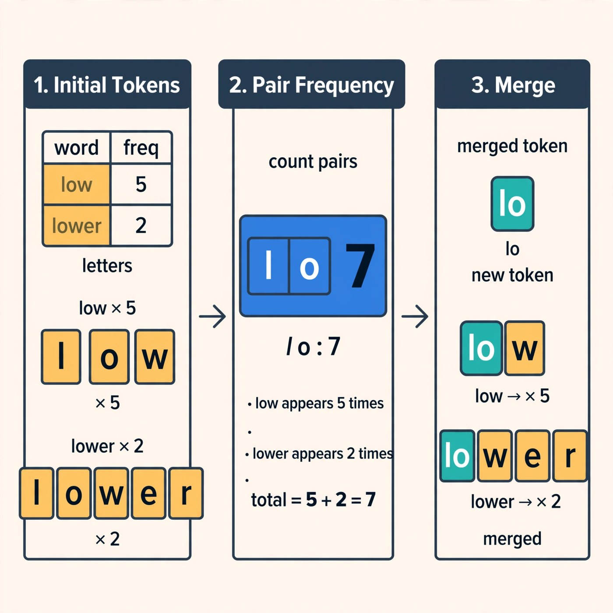
How to read this diagram
- Panel 1 (Initial Tokens) shows the corpus split into letters. "low" appears 5 times, and "lower" appears 2 times. Each letter is its own tile. These tiles are the starting vocabulary.
- Panel 2 (Pair Frequency) counts every adjacent letter pair across the corpus. The pair "l"+"o" appears in "low" (5 times) and in "lower" (2 times): 7 total, the highest count. The blue highlight marks the winner.
- Panel 3 (Merge): "l" and "o" join into one tile, "lo". "lo" is a new vocabulary entry. "low" is now two tokens ("lo","w") instead of three. "lower" becomes ("lo","w","e","r").
What breaks if a step fails: if pair counting ignored word frequencies, rare words would dominate the merges. The vocabulary would memorize noise. If merges apply out of order at encode time, two identical strings tokenize differently. The model sees inconsistent IDs for the same text.
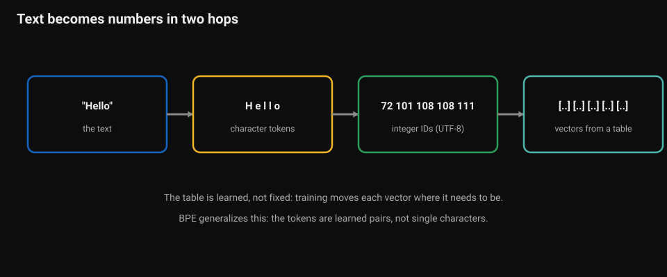
- Read left to right: text, tokens, IDs, vectors.
- The IDs shown are the UTF-8 byte values for “Hello”.
- BPE generalizes this: the tokens are learned pairs, not single characters.
Step 4: ten merges, hand-computed
The lab at the end of this volume trains BPE on this exact corpus. Here are the first ten merges the code produced. The output below is the real code output.
corpus: "low" x5, "lower" x2, "newest" x6, "widest" x3 (split into letters)
merge #1: e + s -> "es" (count 9) # "newest", "widest"
merge #2: es + t -> "est" (count 9)
merge #3: est + </w> -> "est</w>" (count 9)
merge #4: l + o -> "lo" (count 7) # "low", "lower"
merge #5: lo + w -> "low" (count 7)
merge #6: n + e -> "ne" (count 6)
merge #7: ne + w -> "new" (count 6)
merge #8: new + est</w> -> "newest</w>" (count 6)
merge #9: low + </w> -> "low</w>" (count 5)
merge #10: w + i -> "wi" (count 3)
after 10 merges: "newest" is ONE token, "low" is ONE token,
"lower" is ("low","e","r"), "widest" is ("wi","d","est</w>")
Read the pattern. The most frequent words become single tokens first. "newest" becomes one token after 8 merges. "low" becomes one token after 9 merges. The rare word "widest" stays fragmented. This is the compression tradeoff.
The same pattern appears at scale: frequent strings get short codes.
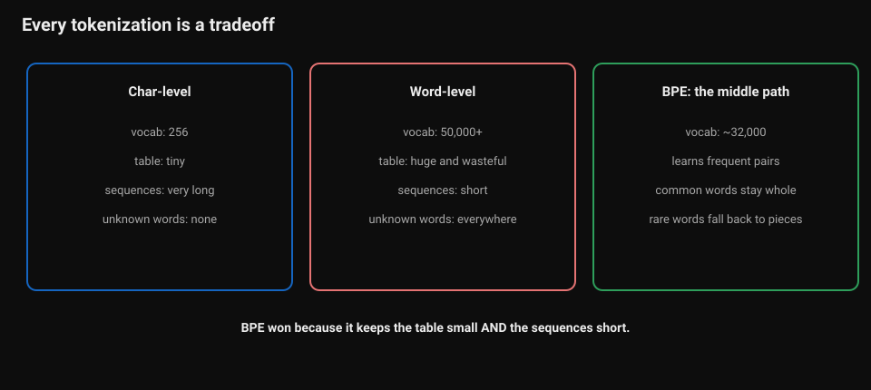
- Each card lists the vocabulary size, the table cost, the sequence length, and the unknown-word problem.
- No choice wins on all four axes.
- BPE keeps the table small and the sequences short.
Step 5: what this costs in production
Real vocabulary sizes: GPT-2 has 50,257 tokens. LLaMA models use 32,000 tokens. The cl100k_base vocabulary of GPT-4 has about 100,000 tokens. A larger vocabulary means fewer tokens per sentence. It also means a bigger embedding table and a bigger final softmax (the layer that turns scores into probabilities). Chapter 2 and Volume 5 return to the tradeoff between vocabulary size and sequence length.
Fertility is the average number of tokens per word. It measures how wasteful a tokenizer is on a language. English text uses about 1.2 to 1.4 tokens per word on modern tokenizers. Code uses more: indentation and symbols fragment into many tokens. Many non-English languages use much more, sometimes several tokens per word. The tokenizer learned its merge statistics mostly on English.
word tokens fertility ---- ------ --------- "cat" [cat] 1.0 "cats" [cat, s] 2.0 "unlikely" [un, like, ly] 3.0 "chat" [chat] 1.0 <- common word, one token "chatting" [chat, ting] 2.0 rule of thumb: 1 token ~ 0.75 English words; ~100 tokens ~ 75 words. common words merge early in BPE and survive as single tokens; rare words shatter into many pieces.
Common misunderstanding: tokens are words. They are not. The word "tokenization" itself can split into "token" + "ization". A token is a whole word, a word part, a single character, or part of a UTF-8 byte sequence. Interviewers probe this point. Engineers who think in words misjudge context usage.
They misjudge cost. They get confused when the model splits a word in a surprising place. Example: the number "12345" can become "12"+"345". This split is part of why LLMs fumble arithmetic.
Key takeaways
- Tokenization maps text to integer IDs. The model only ever sees the IDs.
- Subword tokenization (BPE) beats words and characters. Words cause OOV explosion. Characters cause quadratic attention cost.
- BPE training: count adjacent pairs, merge the most frequent pair, repeat. BPE encoding: apply merges greedily in learned order.
- Fertility (tokens per word) turns token budgets into words and dollars. Fertility differs strongly by language.
Lab pointer: the capstone lab trains a BPE tokenizer from zero on the toy corpus above. It reproduces merges #1 to #10 exactly. Run it before you move on.
Forward link: Volume 5, Chapter 2 takes this tokenizer to scale. It covers BPE training on terabytes of text. It covers packing tokenized documents into fixed-length batches without wasting compute on padding.
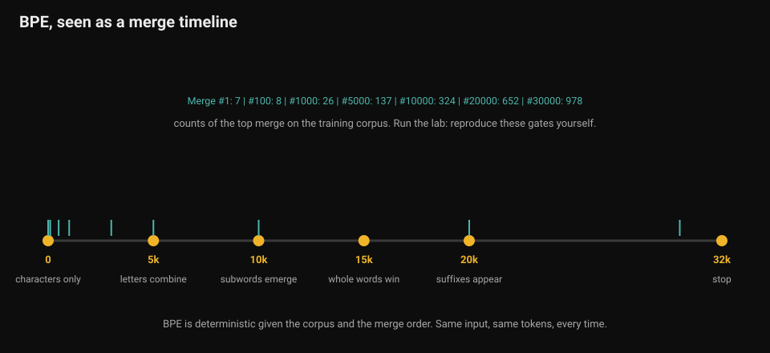
- The x-axis shows merge count, from 0 to 32k.
- Each gate marks a phase change in what merges.
- The teal ticks mark the checkpoints whose counts are printed at the top.
2. Embeddings: points in a learned space
This chapter shows what a token ID becomes before the model uses it.
Chapter 1 turned text into integers. One question remains: what can a model do with bare integers? This chapter answers that question. Every token gets a point in a learned space. The geometry of these points carries meaning.
Design prompt
- "What is an embedding, in geometric terms? What does the distance between two embeddings mean?"
- "Are embeddings learned or fixed? What breaks if the model freezes them?"
- "How many parameters are in the embedding table of a 7B model? Show the arithmetic."
Step 1: from integer to point
An embedding is a vector of floating-point numbers that stands for one token. The model keeps a large lookup table: the embedding matrix. The table has one row per vocabulary entry. Token ID 15496 ("Hello") becomes row 15496 of the table. That row is a vector like [0.13, -0.87, 0.44, ...], with one number per model dimension. If the model dimension is 4,096, every token becomes a point in a 4,096-dimensional space.
Geometrically, an embedding is a point. Tokens with nearby points get similar treatment from the rest of the network. Distance between embeddings is the model's working definition of similarity. Nobody programs these positions. The points start random. Gradient descent pulls them into useful positions during training (Volume 1).
king -
* queen
* |
| |
| man *--+--* woman
| |
boy *-+--* girl |
|
+---- analogy direction (same angle for both pairs)
nearby: king/queen, man/woman, boy/girl cluster by meaning
far: dog, car, river live in unrelated regions
lookup: token id -> row of the embedding matrix -> vector
Step 2: why vectors, and why learned ones
An integer ID like 15496 is nearly useless as input to arithmetic. IDs have no notion of similarity. IDs 15495 and 15496 are adjacent, but they name unrelated tokens. A single number carries almost no information. A high-dimensional vector for each ID gives two things. Capacity: 4,096 numbers encode far more than one integer.
Geometry: similar tokens sit near each other. What the model learns about one token generalizes to its neighbors.
Two designs fill the table:
| Design | What it means | Where you see it |
|---|---|---|
| Fixed | The designer chooses vectors up front and never updates them. The simplest fixed embedding is one-hot. One-hot means the vector has a 1 at one position and 0 elsewhere. Token i becomes a vector with 1 at position i and 0 elsewhere. | You see it in old pipelines, and in frozen word2vec or GloVe vectors reused as features. |
| Learned | Vectors start random. Backpropagation updates them along with every other parameter. | Every modern LLM uses learned embeddings. The embedding table is one more weight matrix that the optimizer trains. |
Fixed one-hot embeddings fail for the same reason integer IDs fail. Every token is equally far from every other token. There is no similarity to use. The vectors have vocabulary size: 50,257 dimensions for GPT-2. They are mostly zeros. Learned dense embeddings fix both problems.
They are compact: a few thousand dimensions. They are geometrically meaningful. If the model froze its embeddings at their random starting values, training still works. But the model must encode all token identity in later layers. That wastes capacity that can hold meaning.
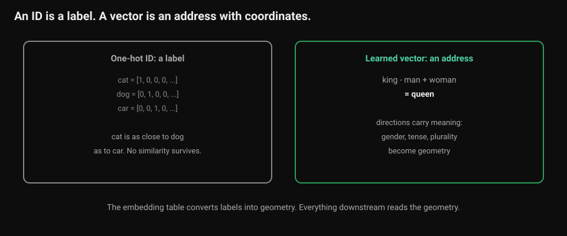
- On the left, one-hot vectors are orthogonal. Orthogonal vectors share no direction, so no similarity survives.
- On the right, directions in the space carry meaning, like gender and tense.
- The embedding table converts labels into this geometry.
Step 3: the full picture: size, geometry, and limits
The embedding table is often the largest single matrix in a small model. LLaMA-style 7B: vocabulary 32,000 times model width 4,096. That is 131,072,000 parameters, about 2% of the model. At GPT-3 scale: 50,257 times 12,288 is 617 million parameters. There is also an output embedding. The output embedding is the final layer.
A hidden state is the vector the network carries for one token. The output layer maps hidden states back to vocabulary scores. Volume 5 covers it. Some models tie the input and output embeddings. To tie them is to reuse one matrix for both directions. Tying saves parameters.
It is a favorite detail in the field.
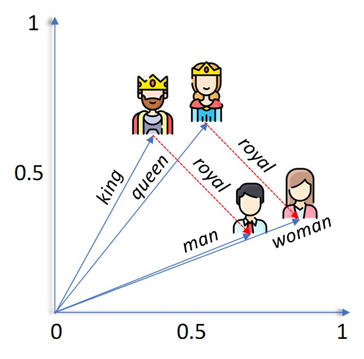
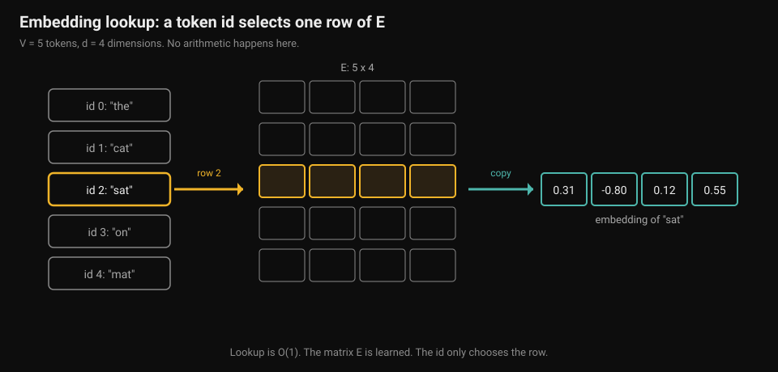
- Left: five token ids, each naming one row.
- The amber id 2 ("sat") points at row 2 of E.
- The whole row is copied out unchanged.
- No arithmetic happens. Lookup is O(1).
How to read this diagram
- Each labeled point is one token's embedding, projected down to 2D. The projection lets human eyes see the layout. The real vectors have thousands of dimensions.
- The dashed arrows are vector differences. "queen" minus "king" points roughly in the same direction as "woman" minus "man". That shared direction is the "royal" or gender direction.
- Why this is possible: tokens that appear in similar contexts move to similar regions during training. "king" and "queen" share contexts: crowns, thrones, reigns. Their points end up near each other. They stay offset along the direction that marks where their contexts differ.
What this diagram does not prove: it does not prove that the model "understands" royalty. It does not prove that vector arithmetic is reliable reasoning. The analogy works for frequent, cleanly separated concepts. It degrades for rare or tangled concepts. It is a property of the geometry, not a reasoning engine.
Common misunderstanding: the embedding of a word is its fixed meaning. Two traps hide in this idea. First, the embedding is context-free: the token "bank" gets the same vector in "river bank" and in "bank loan". Attention builds meaning in context later (Chapter 3). Second, embeddings are not definitions. They are positions that were useful for predicting text.
A token's nearest neighbors hint at its distributional behavior. They are not a dictionary entry.
Key takeaways
- An embedding is a learned vector per token. It is a point in a high-dimensional space. Distance means similarity.
- Modern LLMs learn embeddings with everything else. Fixed one-hot vectors waste the geometry.
- The table costs V x d parameters (131M at 7B scale). Tying input and output embeddings saves a copy.
- Embeddings are context-free. Attention (next chapter) is what puts them in context.
Forward link: the next chapter takes these static points and makes them context-aware. Every attention head in Chapter 3 reads and writes vectors of exactly this shape.
3. Attention, fully worked: every number by hand
The mechanism at the center of every LLM. This chapter computes it with pencil-sized matrices.
Chapter 2 embeddings are context-free. The vector for "bank" is identical in "river bank" and in "bank loan". This chapter closes that gap. Attention lets every token rewrite its vector from every other token's vector. This chapter works the whole mechanism by hand, number by number.
Design prompt
- "Compute one attention head by hand on the given matrices. Show Q, K, V, the scores, the mask, the softmax, and the output."
- "Why divide by the square root of d_k? What breaks without the division?"
- "Explain attention as retrieval that supports gradients. What are the query, the keys, and the values?"
- "What are the time and memory costs of attention as the sequence length grows?"
Step 1: the problem and the idea
Embeddings (Chapter 2) are context-free. "bank" is the same vector in "river bank" and in "bank loan". But meaning depends on context. In "the animal didn't cross the street because it was too tired", the word "it" needs information from "animal", not from "street". Older architectures used recurrence. Recurrence reads left to right, one step at a time.
It cannot use parallel hardware. Others used fixed windows.
Attention solves this directly. Every token builds a new vector from a weighted average of all tokens' vectors. The weights measure how relevant each token is to the current token. Each token asks a question: "what should I look at?" It compares the question against every token's label. It mixes the tokens' contents in proportion to the match. All positions process at once.
Any token reaches any other token directly, at any distance. The whole computation uses parallel hardware fully. The price is quadratic cost in sequence length. That is why long context is expensive. Step 5 works out the numbers.
One gap remains. Nothing in these five steps sees word order. If you shuffle the tokens, the outputs shuffle the same way. "dog bites man" and "man bites dog" look the same to this mechanism. Chapter 4 closes that gap with positional encodings. Until then, follow the ritual as stated.
Step 2: the five-step ritual
One attention head is five steps. Learn them as a fixed ritual:
- Project. Multiply the input matrix X by three learned matrices: Q = XWQ (queries), K = XWK (keys), V = XWV (values). X has one row per token. The input is the same. The three views are different and learned.
- Score. Compute S = QKT / sqrt(dk). Entry (i, j) is the dot product of the query of token i with the key of token j. It measures how much token i wants to look at token j. Divide by sqrt(dk) to keep the numbers in a range that softmax handles.
- Mask (for decoders). Set every score above the diagonal to negative infinity. Token i sees only tokens 0 through i, never the future. This is the causal mask. Causal means each token sees only the past. Without the mask, training lets the model peek at the answer it must predict.
- Normalize. Apply softmax to each row. The scores become non-negative weights that sum to 1.
- Mix. Output = weights x V. Each token's output is a weighted average of the value vectors. The weights are the relevance scores.
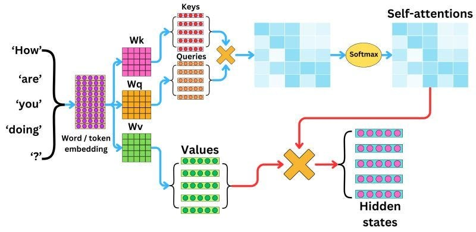
How to read this diagram
- Left column: the left column shows input tokens ("How", "are", "you", "doing", "?"). They form one embedding matrix. One input feeds three learned projections.
- WK, WQ, WV: WK, WQ, WV are the three projection matrices. They are the head's learned parameters. Everything the head "knows" lives in them.
- Keys x Queries: Keys x Queries is the score matrix. Each cell is one query-key dot product. Each cell is one relevance judgment.
- Softmax: softmax turns each row into a probability distribution over positions.
- Weights x Values: Weights x Values is the weighted mix. The output "Hidden states" have the same shape as the input embeddings. So heads stack cleanly.
What breaks if a step fails: without the mask, the model cheats during training: it sees the future. At generation time, the future is absent, so the model fails. Without the sqrt(dk) scaling, the softmax saturates. The next section explains why.
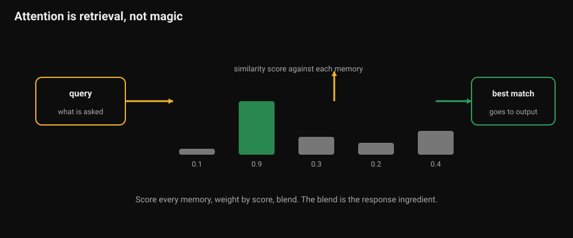
- The query asks what to look for.
- Each bar is a similarity score against one memory. The 0.9 bar wins.
- The output is the score-weighted blend. It is not a single pick.
Interlude: the two equations, written out
The five steps above are compact algebra. Here are the two equations behind steps 2 and 4. Every symbol gets a name.
Softmax, formally: Volume 1, section 3.2. The probability chapter of Math for ML builds softmax from zero. It covers exponentials and normalization. It shows why the outputs form a valid probability distribution.
Worked example: softmax by hand. Take row 1 of the masked scores in Step 3: [1.4142, 1.4142, -inf]. Exponentiate each entry. exp(1.4142) = 4.1131, twice. exp(-inf) = 0. Denominator: 4.1131 + 4.1131 + 0 = 8.2262. Each of the first two weights is 4.1131 / 8.2262 = 0.5. The last weight is 0 / 8.2262 = 0.
Result: [0.5, 0.5, 0]. The row sums to 1.0, exactly as printed in Step 3.
Step 3: every number by hand
The setup: three tokens, model width 4, one head with key/query dimension 2. Every number below comes from the NumPy lab at the end of this volume. Follow along with a calculator.
Inputs. Token embeddings X: 3 tokens by 4 dims. The head's three projection matrices: 4 by 2 each.
X (token embeddings) W_Q W_K W_V
"the" [1, 0, 1, 0] [1, 0] [1, 1] [1, 0]
"cat" [0, 1, 0, 1] [0, 1] [0, 0] [0, 2]
"sat" [1, 1, 0, 0] [1, 0] [1, 0] [1, 1]
[0, 1] [0, 1] [0, 0]
Step 1: project. Q = XWQ, K = XWK, V = XWV. Check the first row by hand: Q row 0 = [1,0,1,0] x WQ = [1x1 + 0x0 + 1x1 + 0x0, 1x0 + 0x1 + 1x0 + 0x1] = [2, 0].
Q = [[2, 0], K = [[2, 1], V = [[2, 1],
[0, 2], [0, 1], [0, 2],
[1, 1]] [1, 1]] [1, 2]]
Step 2: score. Raw scores QKT, then divide by sqrt(2) = 1.4142. Check cell (0,0): [2,0] dot [2,1] = 4, scaled 4/1.4142 = 2.8284.
raw QK^T = [[4, 0, 2], scaled (/1.4142) = [[2.8284, 0, 1.4142],
[2, 2, 2], [1.4142, 1.4142, 1.4142],
[3, 1, 2]] [2.1213, 0.7071, 1.4142]]
Step 3: causal mask. Above-diagonal cells become negative infinity. Token 0 sees only token 0. Token 1 sees tokens 0 and 1. Token 2 sees all three tokens.
masked = [[ 2.8284, -inf, -inf],
[ 1.4142, 1.4142, -inf],
[ 2.1213, 0.7071, 1.4142]]
Step 4: softmax per row. Row 1: exp(1.4142) = 4.1131, twice. Result: [0.5, 0.5, 0]. Row 2: exp(2.1213) = 8.342. exp(0.7071) = 2.028. exp(1.4142) = 4.113. Sum = 14.483. Weights = [0.576, 0.140, 0.284].
weights = [[1.000, 0.000, 0.000],
[0.500, 0.500, 0.000],
[0.576, 0.140, 0.284]] <- rows sum to 1.000
Step 5: mix values. Output row 2 = 0.576 x [2,1] + 0.140 x [0,2] + 0.284 x [1,2]. The products are [1.152 + 0 + 0.284, 0.576 + 0.280 + 0.568]. The sums are [1.436, 1.424].
output = [[2.000, 1.000],
[1.000, 1.500],
[1.436, 1.424]]
Read the result. Token 0 ("the") sees only itself. Its output is its own value vector. Token 1 ("cat") splits attention evenly between "the" and itself. Token 2 ("sat") leans mostly on "the" (0.576). It leans a little on "cat" (0.140) and on itself (0.284).
Through its learned projections, the head treats "the" as the most informative context for "sat".
Why divide by sqrt(dk)? The saturation argument, precisely.
A dot product of two random vectors of dimension dk with unit variance has variance dk. Variances add across the dk terms. So its typical size grows like sqrt(dk). If unscaled scores enter softmax, the largest score dominates completely. Softmax outputs approach a one-hot vector. The gradient of softmax with respect to its inputs approaches zero.
Learning stalls. Dividing by sqrt(dk) returns the scores to unit variance. This keeps softmax in its sensitive middle range, where gradients flow. With dk = 64 (a common head size), unscaled scores are about 8 times too large.

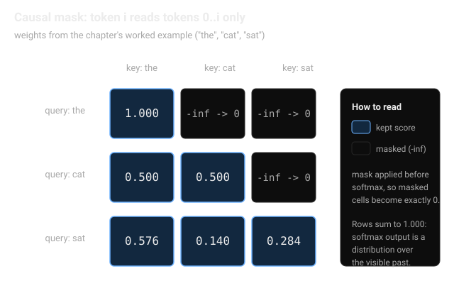
How to read this diagram
- Rows are queries, columns are keys. Cell (i, j) is how much token i attends to token j. Read row 2 ("sat"): 0.576 on "the", 0.140 on "cat", 0.284 on itself.
- Blue cells are kept. Gray cells are masked. The mask is the upper triangle. Every cell above the diagonal is negative infinity before softmax. This forces its weight to exactly 0.
- Every row sums to 1. Softmax turns each row into a distribution over the visible past only. Row 0 has no past, so it is [1, 0, 0].
What breaks without the mask: during training, the model peeks at future tokens. At generation time, the future is absent, so the model fails. The mask makes training match generation.
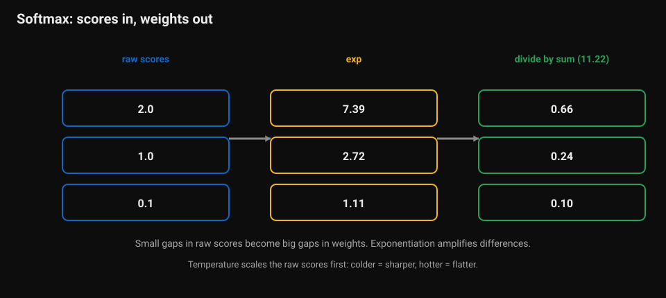
- Column one shows the raw scores from the attention dot products.
- Column two: exp amplifies the differences.
- Column three: dividing by the sum makes proper weights that add to 1.
Step 4: what the heads actually learn
Map the five steps onto a search engine.
| Retrieval concept | Attention equivalent | What it does |
|---|---|---|
| Search query | Query vector | It encodes "what am I looking for" for this token at this layer. |
| Index labels | Key vectors | They encode "what I offer" for every token. Matching is a dot product: a learned similarity. |
| Stored documents | Value vectors | The actual content retrieved. The mix follows match strength. |
| Ranking + top-k | Softmax | It turns match scores into a probability distribution. Unlike top-k, it is soft: every token contributes something. The whole mechanism is differentiable. So gradient descent tunes what gets retrieved. |
"Differentiable" is the key word. A database lookup is discrete. You get document #7 or you do not. No gradient passes through that choice. Attention replaces the hard choice with a weighted blend. So the retrieval behavior itself is learned end to end.
The head learns what to ask for (WQ). It learns how to label content (WK). It learns what content to store (WV). It learns all three at once.

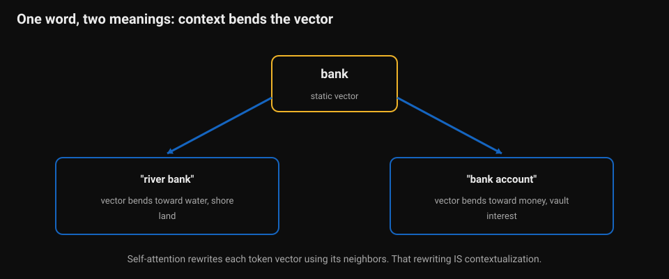
- At the top, the same static vector enters both contexts.
- On the left and right, neighbors bend it toward water or toward money.
- Self-attention applies this rewriting to every token.
Step 5: the quadratic bill
The score matrix is n x n for a sequence of n tokens. Time and memory both scale as O(n2 x d). Concrete numbers: n = 4,096, one head, float32. The score matrix holds 4,0962 = 16.8 million numbers = 67 MB. With 32 heads, that is 2.1 GB per layer just for scores. This is before values, gradients, or optimizer state.
If you double the context to 8,192, the bill quadruples. This one fact drives much of LLM systems research. FlashAttention (Volume 6) recomputes the scores instead of storing them. The KV cache (Chapter 8) exists because re-paying this bill on every generated token is too expensive.
Common misunderstanding: attention weights explain the model's decision. Treat this claim with suspicion in design reviews. Attention weights show where information flowed. They do not show why the output is what it is. The mixed values shape the result too. The later layers shape the result too.
The residual stream shapes the result too. The residual stream is the shared vector. Every sublayer reads from it and adds its updates to it. Chapter 6 details it. Researchers have shown that attention weights can change a lot without changing predictions. Say: "weights are a clue about information routing, not a certificate of reasoning."
Field relevance: this is the most whiteboarded mechanism in ML design reviews. The strong candidate writes the five steps from memory. The strong candidate hand-computes a 2x2 or 3x3 case without flinching. The strong candidate states the sqrt(dk) saturation argument. The strong candidate quotes the O(n2) cost with a real number: 67 MB per head at 4k context. The retrieval framing shows understanding, not memorization.
The one-liner: "attention is differentiable retrieval."
Key takeaways
- One head does five steps: project to Q, K, V. Score with QKT/sqrt(dk). Apply the causal mask. Apply softmax. Mix the values.
- The sqrt(dk) scaling keeps softmax out of saturation so gradients flow.
- The causal mask makes training match generation. No token peeks at the future.
- Attention is differentiable retrieval. Queries, keys, and values are learned. Matching is soft.
- Cost is O(n2d) time and O(n2) memory. At 4k context, one head's score matrix is 67 MB.
Lab pointer: the capstone lab replays this exact example in NumPy. It asserts that every intermediate matrix matches the numbers above. If your implementation disagrees, your implementation is wrong. That is the point of the exercise.
Forward link: Chapter 6 runs many of these heads in parallel. It stacks them into the full transformer block. Chapter 8 shows why the model caches the K and V matrices during generation.
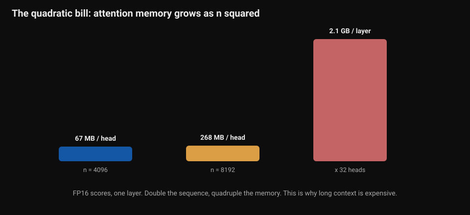
- The three bars show the same layer at growing scale.
- Doubling n quadruples the score matrix. That is the n-squared.
- This is why long context is expensive. This is why the next chapters exist.
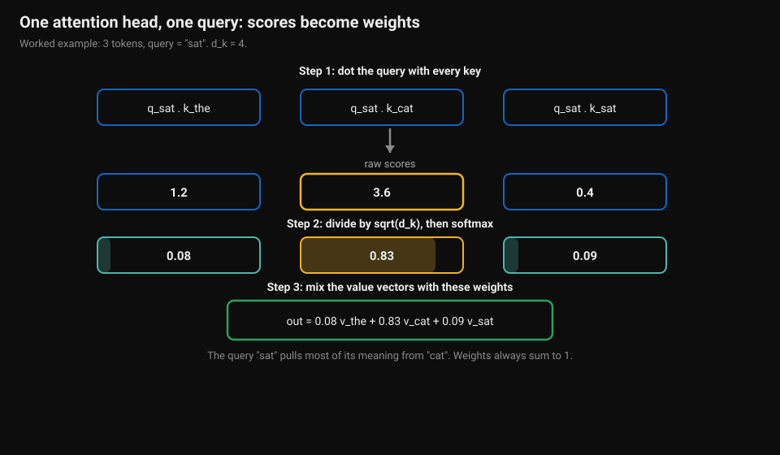
- Step 1: three dot products, one per key.
- Step 2: softmax turns 1.2, 3.6, 0.4 into 0.08, 0.83, 0.09. The bars show the weight sizes.
- Step 3: the output is the weighted mix. "sat" draws 83 percent of its meaning from "cat".
- The weights always sum to 1. Attention is a weighted average.
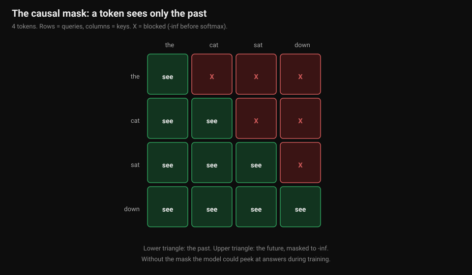
- Row "cat" sees "the" and "cat" but not "sat".
- The upper triangle is the future: always blocked.
- Masking happens before softmax, so blocked positions get weight zero.
- Without the mask, training could peek at answers.
4. Positional encodings: sinusoids, then RoPE derived deeply
Attention cannot see order. This chapter gives it a position signal.
Chapter 3 ended with one unsolved gap. Attention ignores word order. So "dog bites man" and "man bites dog" look identical to it. This chapter adds the position signal. It moves from simple sinusoids to RoPE, derived from zero.
Design prompt
- "Why does attention need positional information? What happens with no position encoding?"
- "Write the sinusoidal encoding formula. Explain why the frequencies differ per dimension."
- "Derive RoPE in 2D. Why does a rotation encode relative position?"
Step 1: why attention is position-blind
Look at the attention formula from Chapter 3. It is a set operation. A set operation treats the input as an unordered set. If you permute the input tokens, the outputs permute the same way. Attention has no notion of order. "dog bites man" and "man bites dog" produce the same bag of contextualized vectors, just reordered.
A positional encoding injects order information. So the model distinguishes the two sentences.
Without any position signal, the model sees only bags of words. It learns which tokens co-occur. It does not learn sequences, grammar, or arithmetic. Every position scheme answers one question. How do we tell the model where each token sits? The answer must generalize to sequences longer than the training sequences.
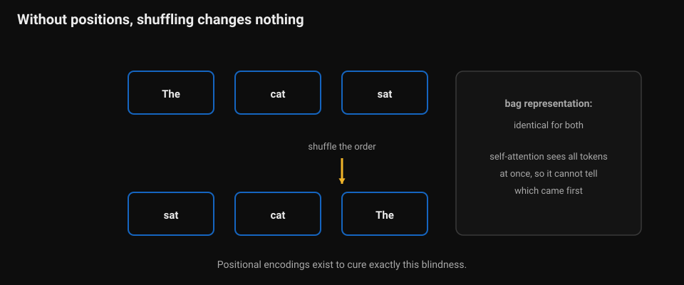
- The top row shows the original order. The bottom row shows the shuffled order.
- The box on the right is what attention sees without positions. Both rows look identical.
- Every positional encoding scheme answers this diagram.
Step 2: sinusoids, the original answer
The 2017 Transformer paper added a fixed vector to each token embedding. Fixed means not learned. For position pos and dimension pair 2i, 2i+1:
PE(pos, 2i) = sin(pos / 10000^(2i/d))
PE(pos, 2i+1) = cos(pos / 10000^(2i/d))Each dimension is a wave along the position axis. The wavelength grows geometrically with the dimension index. Dimension 0 oscillates fast: wavelength 2 pi. The last dimension oscillates slowly: wavelength 2 pi x 10000. Why this shape? Two reasons.
First, every position gets a unique fingerprint. The combination of frequencies never repeats within any realistic context length. Second, shifting position by k is a linear transformation of the encoding. It is a rotation in each 2D subspace, by the angle addition formulas. So the model learns to attend to "three tokens ago" as a fixed linear operation. This works independent of absolute position.
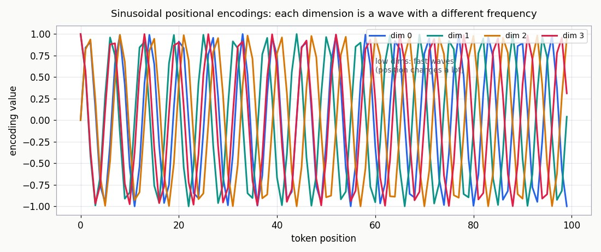
How to read this diagram
- The horizontal axis is token position (0 to 100). The vertical axis is the encoding value added to the embedding.
- Each curve is one dimension of the position vector. Dimension 0 completes many cycles. Dimension 3 barely completes a fraction of one cycle.
- The teaching point: the model gets position at multiple resolutions at once. Fast waves distinguish neighbors. Slow waves distinguish "early in the document" from "late". No dimension is wasted. Together they form a unique fingerprint per position.
Limitation: the encoding is absolute. It says "position 47", not "3 after position 44". The model must learn relative relationships from these absolute fingerprints. This works, but it generalizes poorly to sequences longer than training.

Step 3: RoPE, derived deeply
RoPE (rotary position embedding) is the position scheme in LLaMA, PaLM, GPT-NeoX, and most modern LLMs. Instead of adding a position vector, RoPE rotates the query and key vectors. It rotates each vector by an angle proportional to its position. After rotation, the attention score between two tokens depends only on their relative distance. Sinusoids approximated this property. RoPE delivers it exactly.
The 2D derivation
Take one dimension pair of a query vector at position m: q = (q1, q2). RoPE rotates it by angle m x theta:
R(m) q = | cos(m*theta) -sin(m*theta) | | q1 |
| sin(m*theta) cos(m*theta) | | q2 |Apply the same rotation to a key k at position n: rotation by n x theta. Their dot product:
(R(m) q) . (R(n) k) = q . R(n - m) kThis is the whole trick. It follows from rotation composition. Rotating q by m and k by n, then dotting, equals dotting q against k rotated by (n - m). The absolute positions m and n cancel. Only the distance (n - m) survives. The attention score now encodes "how far apart are these tokens".
No absolute position remains.
Each dimension pair gets its own theta: thetai = 10000(-2i/d). This is the same geometric wavelength schedule as the sinusoids. Fast pairs resolve nearby positions precisely. Slow pairs carry long-range distance. The full vector is many independent 2D rotations joined together.
The RoPE symbols, named. R(m): rotation by angle m x theta. It applies to the query or key at position m. Here m and n are absolute token positions. Theta is the base rotation speed, one value per pair (thetai). The per-pair speed is thetai = 10000(-2i/d), where i is the dimension-pair index and d is the head width.
(n - m): the relative distance. It is the only position information that survives into the attention score. Step 4 rotates q = (3, 4) and k = (1, 2) by hand.
It shows the distance surviving.
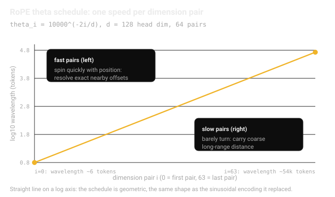
How to read this diagram
- The horizontal axis is the dimension pair index (0 to 63 for a 128-wide head). The vertical axis is the rotation wavelength in tokens, on a log scale.
- The straight line is the geometric schedule. Each pair's theta is 10000(-2i/d). Wavelengths multiply by a constant factor per pair. The shape matches the sinusoidal encoding.
- Left pairs are fast, right pairs are slow. Fast pairs distinguish exact nearby offsets. Slow pairs encode "far apart" without saturating. Together the 64 pairs give the model position at every scale at once.
Why this matters for extensions: NTK-aware scaling and YaRN (Appendix 4A) reshape this line. They protect the fast left end. They stretch the slow right end.
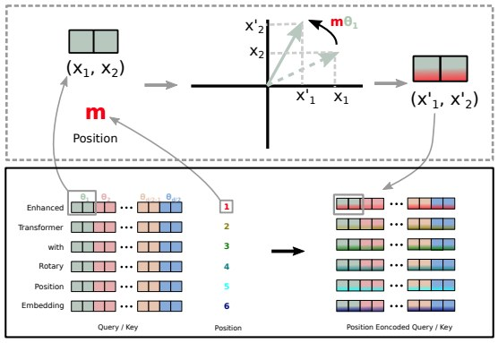
How to read this diagram
- Top panel: the 2D case. RoPE rotates vector (x1, x2) by m x theta1, where m is the position. Rotation preserves the vector's length (norm). So it changes direction only. The rotation leaves the token's content intact.
- Bottom panel: the same rotation applied to every query and key position 1 to 6. Position 1 rotates a little, position 6 rotates a lot. Each position gets a distinct orientation.
- The payoff (not drawn, derived above): when a rotated query dots a rotated key, the two rotations partly cancel. Exactly the relative offset remains. That is why RoPE generalizes to longer sequences better than absolute encodings. "three apart" looks the same everywhere.
What breaks if misapplied: apply RoPE to Q and K before the dot product. Never apply it to V. Values carry content, not addresses. Rotating them scrambles what gets retrieved. A common implementation bug uses the wrong theta schedule. It silently destroys long-range position signal.
Short-range signal still works. The loss alone cannot reveal this bug.
Step 4: RoPE by hand
q = (3, 4) at position m = 2, k = (1, 2) at position n = 5, theta = 0.5 rotate q by m*theta = 1.0 rad: cos = 0.5403, sin = 0.8415 q' = (3*0.5403 - 4*0.8415, 3*0.8415 + 4*0.5403) = (-1.7451, 4.6857) norm check: sqrt(1.7451^2 + 4.6857^2) = 5.0000 = original norm (rotation preserves length) rotate k by n*theta = 2.5 rad: k' = (-1.9981, -1.0037) score via absolute positions: q' . k' = -1.2169 score via RELATIVE distance only: q . R((n-m)*theta) k = (3,4) . R(1.5 rad)(1,2) = (3,4) . (-1.9243, 1.1389) = -1.2173 -1.2169 vs -1.2173: identical up to rounding. The absolute positions vanished. Only (n - m) = 3 mattered.

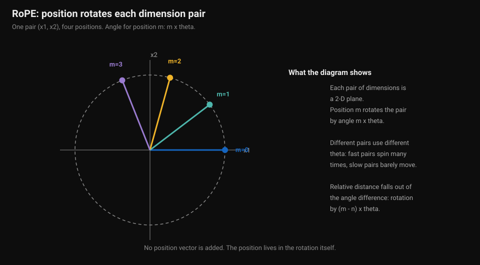
- The dashed circle is one dimension pair (x1, x2).
- Position m rotates the pair by m times theta.
- Relative distance is the angle difference: rotation by (m-n) times theta.
- Different pairs spin at different speeds. Fast pairs track local order. Slow pairs track long range.
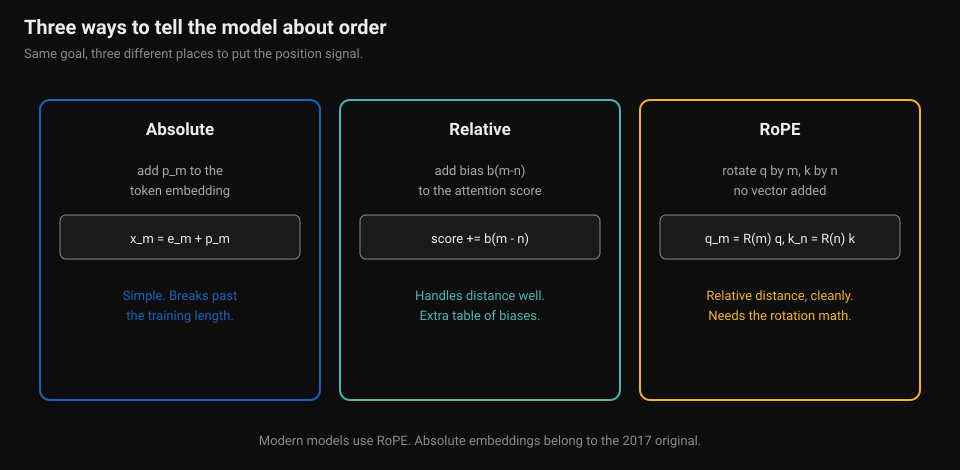
- Absolute: x = e + p. Simple, but unseen positions break it.
- Relative: score += b(m-n). Distance-aware, needs a bias table.
- RoPE: rotate q by m and k by n. Relative distance falls out for free.
- Modern models use RoPE.
Common misunderstanding: RoPE adds position information to the embeddings. It does not add anything. It rotates Q and K inside the attention computation. The token embeddings never contain an explicit position vector. The residual stream never contains one either. This matters when people try to "read" positions out of hidden states.
It matters when they apply RoPE twice: once at embedding, once in attention. Double application rotates twice and silently corrupts distances.
Field relevance: RoPE is the position question at modern labs. The strong candidate derives the 2D case on the board. The strong candidate states the relative-distance property as the reason it won. The strong candidate names the theta schedule. Bonus: know the extrapolation caveat. RoPE trained on 4k context degrades beyond 4k.
That is why long-context extensions exist: position interpolation and YaRN-style rescaling. Those extensions belong to Volume 8. Here, just know the boundary.
Key takeaways
- Attention is permutation-invariant. Position encodings supply order.
- Sinusoids are fixed multi-frequency waves. A relative shift is a linear operation on the encoding.
- RoPE rotates Q and K by position-proportional angles. Scores then depend only on relative distance (n - m).
- Rotation preserves norms. Apply RoPE to Q and K only, never to V. Theta follows the 10000^(-2i/d) schedule.
Forward link: Volume 8 (inference) covers generation past the trained context length. There, RoPE's angles go where they have never been. Volume 12 (paper spine) reads the RoFormer paper itself.
5. Activations and where normalization lives
This chapter covers GELU and SwiGLU. It shows why the norm moved before the sublayer.
Chapters 1 through 4 built attention over tokens. But attention is not the whole block. This chapter fills in the machinery around it. It covers activation functions and normalization. It shows exactly where normalization sits in the stack.
Design prompt
- "What is GELU? Why did transformers switch to it from ReLU?"
- "Write SwiGLU and explain the gating. How many matrices does the MLP have?"
- "Pre-norm vs post-norm: draw both. Explain why the field moved to pre-norm."
Step 1: why the MLP needs a nonlinearity
A transformer block has two sublayers. The transformer block is the repeating unit of Chapter 6. Attention mixes information across positions. The second sublayer is a small feed-forward network: the MLP. The MLP transforms each position independently. It expands the width: 512 to 2048.
It applies a nonlinearity. It projects back: 2048 to 512. The nonlinearity is the only thing that stops the whole block from collapsing into a single linear map. Volume 1 shows that compositions of linear maps are linear. The choice of nonlinearity affects trainability. It affects quality slightly.
Two nonlinearities dominate modern LLMs.
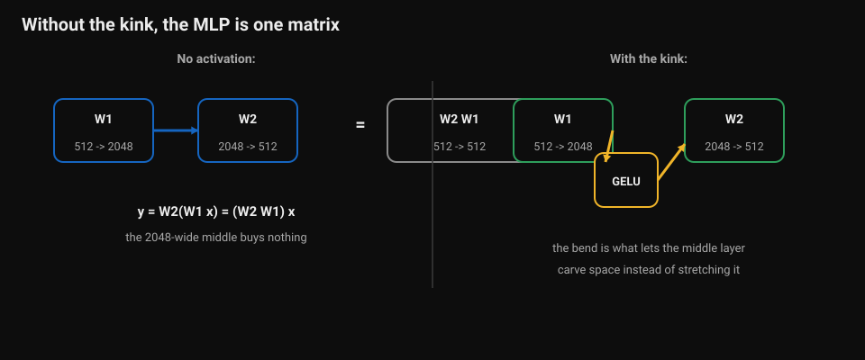
- On the left, two matrices with no kink multiply into one.
- The equation under it is the proof. The middle dimension disappears.
- On the right, the kink between the layers makes the width real.
Step 2: GELU and SwiGLU, precisely
GELU (Gaussian error linear unit) is used in GPT-2 and BERT: GELU(x) = x x Phi(x). Phi is the standard normal CDF. CDF means cumulative distribution function. It is the S-shaped curve that maps any input to a probability between 0 and 1. In code, it is the approximation 0.5 x (1 + tanh(sqrt(2/pi) (x + 0.044715 x^3))).
Intuition: ReLU (rectified linear unit) is the older default. ReLU outputs x if x is positive, else 0. ReLU multiplies x by a hard gate: 1 if x is positive, else 0. GELU multiplies x by the probability that x is positive under a Gaussian assumption. That probability is a smooth gate. Small negative values pass a little instead of dying outright.
This keeps gradients alive where ReLU is exactly dead.
SwiGLU is used in LLaMA and PaLM: SwiGLU(x) = Swish(xW) elementwise-times (xV), where Swish(z) = z x sigmoid(z). Sigmoid squashes any input into the 0-to-1 range. So it works as a smooth gate. Read SwiGLU as a gated linear unit: one projection (xV) carries the content. A second projection (xW) passes through Swish. It acts as a learned per-element gate.
The gate decides how much of each content element survives. The MLP now has three matrices: gate, up, down. A plain MLP has two. The gate gives the network multiplicative interactions. A plain activation cannot express these interactions.
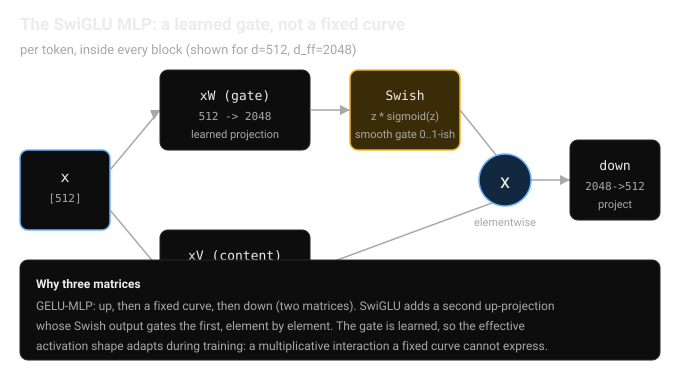
How to read this diagram
- Two projections go up, one goes down. Both branches expand 512 to 2048. The down projection contracts back to 512. That is the three-matrix count from the parameter arithmetic.
- The gate branch decides what survives. Swish(xW) is a smooth per-element gate. Where it is near zero, that content element is erased. Where it is large, the content passes through amplified.
- The multiply is the key difference. A GELU MLP applies a fixed curve to one projection. SwiGLU multiplies two learned projections. This expresses multiplicative interactions between features that no fixed curve can.
Read the numbers off this picture: 3 x 512 x 2048 = 3,145,728 parameters per block. That is about 3 times the attention projections. That is why the MLP dominates the parameter count.
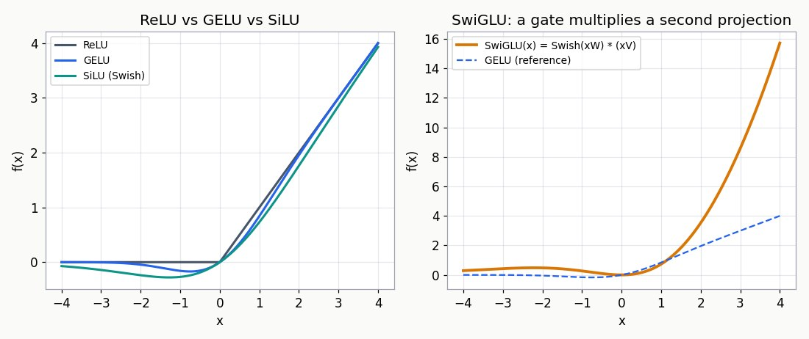
How to read this diagram
- Left panel: near zero, GELU and SiLU curve smoothly, while ReLU has a sharp kink. The kink is a discontinuity in the derivative. The smooth curves keep gradients flowing for slightly negative inputs.
- Far left and far right: all three agree asymptotically. They act as identity for large positive x, and near zero for large negative x. The differences live in the transition region. That is where most activations sit during training.
- Right panel: SwiGLU is not a fixed curve applied elementwise. It is the product of two learned projections. So its effective shape adapts during training. The amber curve shows the characteristic gated shape for one setting of the projections.
Step 3: where normalization lives
LayerNorm (Volume 3) normalizes each token's vector to zero mean and unit variance. Then it applies learned scale and shift. RMSNorm is its cheaper sibling. It skips the mean-centering. It divides by the root-mean-square only. It has the same stabilizing effect with slightly less compute.
That is why LLaMA-style models use it. The question is where the norm goes in the block. This chapter settles the two ingredients Chapter 6 needs to assemble the block. Ingredient one: the MLP's nonlinearity. Ingredient two: the norm's placement.
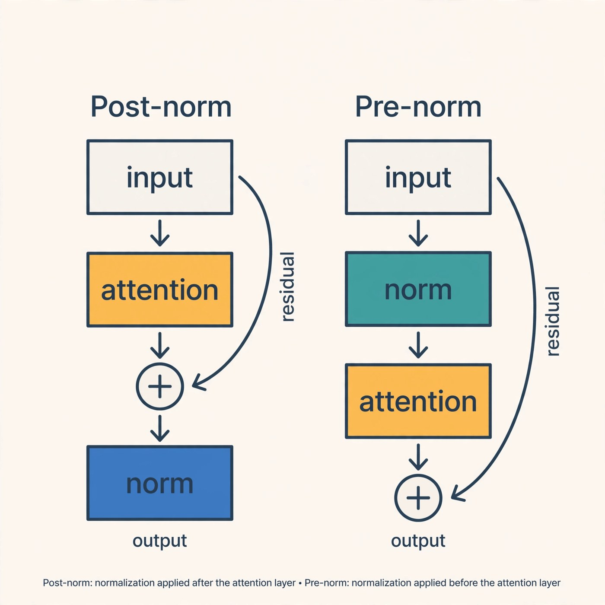
How to read this diagram
- Left (post-norm): input flows through attention. The block adds it to the residual, then normalizes. Each block re-normalizes its output. So the stream entering the next block always has controlled scale.
- Right (pre-norm): the block normalizes the input first. Then attention transforms it. Then the block adds the raw result to the untouched residual. The residual stream itself is never normalized.
- The curved arrows are the residual paths. In pre-norm, gradients flowing backward along this path never pass through a normalization. So they propagate cleanly through all layers.
Why the field moved: post-norm trains fine for shallow stacks. It becomes unstable as depth grows. Each block's output scale compounds through repeated normalize-add cycles. Gradients must fight through every norm. Pre-norm trains stably at 80+ layers with less learning-rate tuning. The cost: the residual stream's magnitude grows with depth.
Each block adds to it unnormalized. The final norm before the output layer handles this growth.
What breaks if you mix them up: a post-norm checkpoint loaded into a pre-norm architecture produces garbage. The same holds in reverse. The learned scales assume a specific placement. Architecture strings in model configs exist to prevent this mistake.
POST-NORM (original 2017): PRE-NORM (modern LLMs):
x -> [Sublayer] -> + -> [Norm] -> y x -> [Norm] -> [Sublayer] -> + -> y
^ | ^ |
+---- residual ---+ +---- residual (clean) --+
gradient must pass through gradient has a direct identity path
the norm to reach early layers around every sublayer -> stable at depth
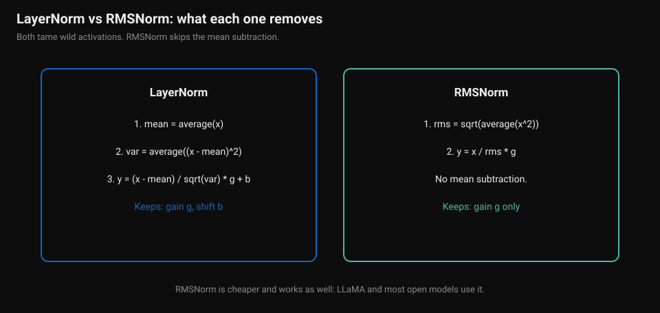
- LayerNorm: subtract the mean, divide by the standard deviation, apply gain g and shift b.
- RMSNorm: divide by the root mean square, apply gain g. No centering.
- Fewer operations, same stability in practice.
- Most open models use RMSNorm.
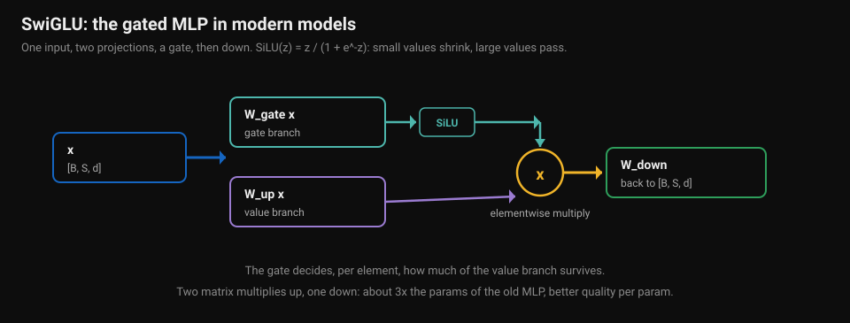
- x splits into two projections: W_gate (gate) and W_up (value).
- SiLU smooths the gate: small values shrink toward zero, large values pass.
- The amber circle multiplies gate and value elementwise.
- W_down projects back to width d. If the gate dies, the branch contributes nothing.
Key takeaways
- GELU is a smooth ReLU-like gate that uses the Gaussian CDF. It keeps small negatives alive.
- SwiGLU multiplies Swish(xW) by (xV). It is a learned gate with three MLP matrices. It is the modern default.
- RMSNorm is LayerNorm without mean centering. It is cheaper and equally stabilizing.
- Pre-norm won because the residual path stays unnormalized and gradients flow through deep stacks.
Forward link: Volume 5 shows these blocks at training time. The optimizer updates every matrix here. The learning-rate schedule keeps this deep pre-norm stack stable in the first thousand steps.
6. Multi-head attention and the transformer block
Many heads, one block. Every tensor shape accounted for.
Chapter 3 worked one attention head. Chapter 5 added activations and normalization. This chapter assembles the full transformer block. Many heads run in parallel. The residual stream carries everything forward. The chapter shows the exact order of operations.

Design prompt
- "Why use multiple heads instead of one bigger head? What does each head learn?"
- "Walk through one transformer block. Give the tensor shape after every operation. Use batch 2, sequence 128, width 512, 8 heads."
- "Where do the residual connections go? What breaks without them?"
Step 1: many heads, many relevance patterns
Multi-head attention runs several attention heads (Chapter 3) in parallel on the same input. Then it concatenates their outputs. Then it projects back to the model width. If the model width is 512 and there are 8 heads, each head works in its own 64-dimensional subspace. 512 / 8 = 64. Each head has its own WQ, WK, WV.
So each head learns a different notion of relevance.
One head implements only one retrieval pattern at a time. A single softmax forces a single probability distribution over positions. Language needs many patterns at once. In "the animal didn't cross the street because it was too tired", resolving "it" needs coreference tracking. The same layer also needs subject-verb agreement, prepositional attachment, and local phrase structure. With 8 heads, head 3 specializes in coreference while head 6 tracks syntax.
The concatenation carries all of it forward.
Trained heads do specialize this way. Some attend mostly to the previous token. Some attend to syntactic parents. Some spread broadly. The expressive gain comes from the multiple independent distributions. It does not come from the parameter count.

Step 2: the full block, end to end
A transformer block is the repeating unit of the model. It has four parts: attention sublayer, feed-forward sublayer, normalization, and residual connections around each. Modern decoders (LLaMA-style) use the pre-norm layout. Pre-norm means: normalize, then sublayer, then add the residual. The reference model: batch B=2, sequence S=128, width d=512, heads h=8, head dim dk=64. Feed-forward width dff=2048, vocabulary V=32,000.
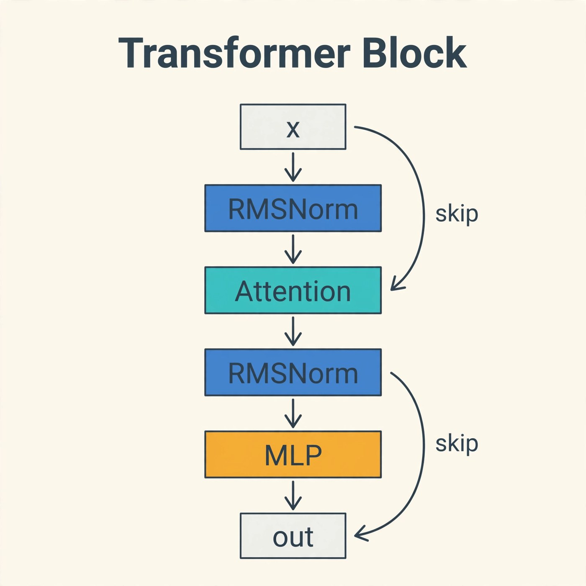
How to read this diagram
- Top to bottom is data flow. The token vectors enter at the top and exit transformed at the bottom. The shape is the same in and out. That is why blocks stack.
- Blue RMSNorm boxes come before each sublayer (pre-norm). Normalization first keeps the inputs to attention and MLP well scaled.
- The curved arrows are residual connections. Each sublayer's output is added to its input. The block learns a refinement (delta) to the stream, not a replacement. This lets gradients flow through dozens of layers (Volume 3: residual networks).
- Attention comes first, then the MLP. Attention mixes information across positions: tokens talk to each other. The MLP transforms each position independently: per-token computation. The block alternates communication and computation.
Step 3: trace the shapes
B=2 (batch), S=128 (sequence), d=512 (width), h=8 (heads), dk=64 (head dim),
dff=2048 (MLP width), V=32000 (vocab). All shapes shown as [B, S, ...].
token IDs [2, 128]
| embedding lookup (Ch 2) + position signal (Ch 4)
x [2, 128, 512]
|
|--- residual branch 1 ---|
| v
+--> RMSNorm [2, 128, 512] (normalize per token, Ch 5)
|
+--> Q,K,V projections 3 x [2, 128, 512]
+--> reshape per head 3 x [2, 128, 8, 64] -> [2, 8, 128, 64]
+--> scores QK^T/sqrt [2, 8, 128, 128] (16k scores per head)
+--> causal mask + softmax [2, 8, 128, 128]
+--> x V [2, 8, 128, 64]
+--> merge heads [2, 128, 512]
+--> output projection [2, 128, 512]
+--<-- add residual
a [2, 128, 512]
|
|--- residual branch 2 ---|
| v
+--> RMSNorm [2, 128, 512]
+--> MLP up + gate [2, 128, 2048] (SwiGLU, Ch 5)
+--> MLP down [2, 128, 512]
+--<-- add residual
out [2, 128, 512] (next block takes over)
after the last block: RMSNorm -> linear to vocab -> logits [2, 128, 32000] (logits: raw unnormalized scores, one per vocabulary token; softmax turns them into probabilities)
Three things to notice. First, the two shapes entering each residual add must match exactly. That is why the output projection exists. It maps the concatenated heads back to width 512. Second, attention is the only operation where positions interact. Everything else is per-position.
Third, the score tensor [2, 8, 128, 128] is where the quadratic cost lives. 8 heads x 128 x 128 = 131,072 scores for this toy case. It grows with S2.
Parameter count of one block (reference model above).
Attention: 4 projections (Q, K, V, output), each 512x512 = 262,144. Total 1,048,576. MLP: SwiGLU has three matrices (gate, up, down): 3 x 512x2048 = 3,145,728. Normalization scales: 2 x 512 = 1,024. Per block: about 4.2M parameters. A 32-block model at this width is roughly 134M parameters plus embeddings.
The MLP holds about 3x the parameters of attention. This surprises most people. The transformer is mostly feed-forward by parameter count. Attention is mostly compute by FLOPs at long context.
Common misunderstanding: deeper layers refine the same representation. The precise picture is the residual stream. Think of x as a shared workspace. Every sublayer reads from it and writes deltas to it. Attention heads and MLPs do not hand a finished product down a pipeline. They each add small updates to a common stream.
That is why you can sometimes delete or shuffle middle layers of a trained model with only mild damage. It is the mental model that makes residual connections click (Volume 3).
Key takeaways
- Multi-head attention means several independent attention distributions in parallel subspaces. The head outputs are concatenated and re-projected.
- One block runs pre-norm, attention, residual add, pre-norm, MLP, residual add. Attention mixes across positions. The MLP computes per position.
- Shapes: [B,S,512] in and out. Scores [B,8,S,S] carry the quadratic cost. The MLP holds about 3x the parameters of attention.
- Residual stream mental model: sublayers add deltas to a shared workspace.
Forward link: Volume 6 (distributed training) needs this chapter's parameter and activation accounting. It explains what gets sharded across GPUs. It explains what the KV cache (Chapter 8) stores per layer.
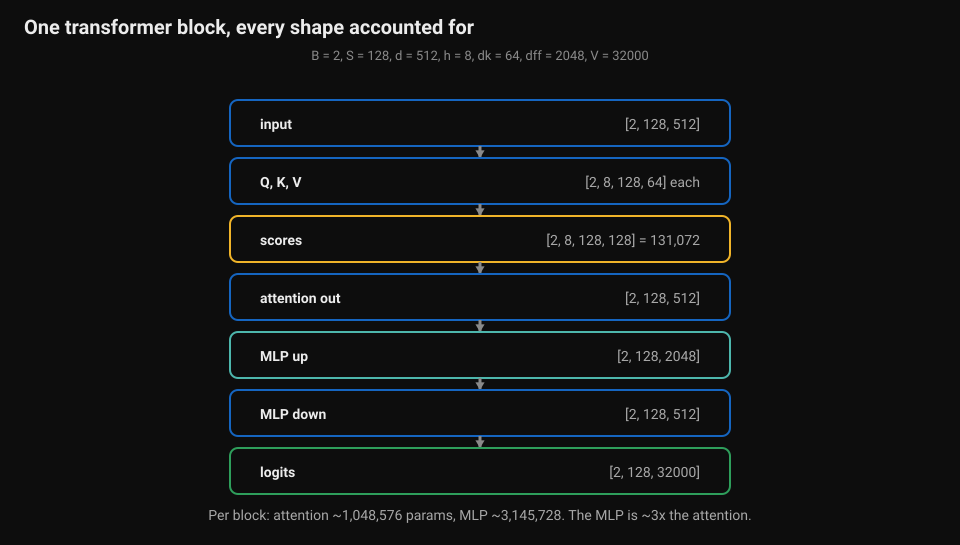
- Read top to bottom. Each row is one stage's tensor shape.
- The amber row is the score matrix: the n-squared term.
- The bottom line is the param budget. The MLP is about 3x the attention.
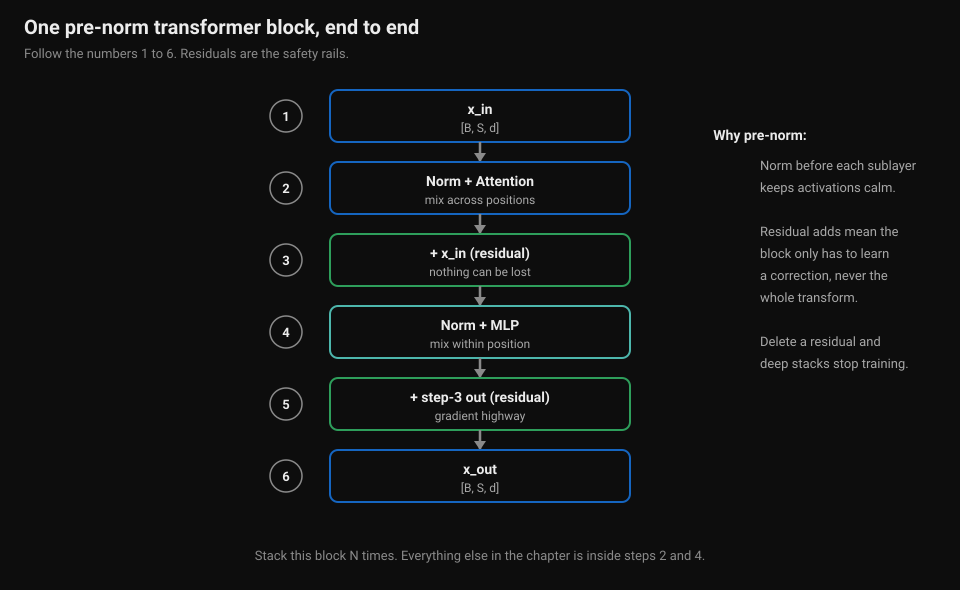
- Steps 1 to 3: normalize, attend across positions, add the input back.
- Steps 4 to 6: normalize, run the MLP within each position, add back again.
- Each residual means the block learns a correction, never the whole transform.
- Delete a residual and deep stacks stop training. The gradient highway is gone.
7. MHA vs MQA vs GQA: the memory tradeoff
Same queries, fewer key-value heads. This buys serving memory at a small quality cost.
Chapter 6's full block is expensive at serving time. The memory bill grows with every attention head. This chapter asks what can shrink. MHA versus MQA versus GQA: the memory tradeoff stated plainly.
Design prompt
- "What is the difference between MHA, MQA, and GQA? Draw the head wiring for each."
- "A 70B model with GQA-8 serves at 4k context. Compute its KV cache per token in fp16."
- "Why does reducing KV heads speed up decoding, not just save memory?"
Step 1: the three wirings
Recall Chapter 6. With h query heads, standard MHA (multi-head attention) also uses h key heads and h value heads. That is one pair per query head. The variants share key-value heads across groups of query heads:
| Variant | Query heads | KV heads | Wiring |
|---|---|---|---|
| MHA (multi-head attention) | h | h | Each query head gets its own K and V heads. The 2017 default. |
| MQA (multi-query attention) | h | 1 | All query heads share a single K head and a single V head. |
| GQA (grouped-query attention) | h | g (between 1 and h) | Query heads are split into g groups. Each group shares one K/V head pair. MHA and MQA are its endpoints. |
Nothing about the query side changes. Every variant keeps all h query heads and their independent attention distributions. The variants share only the keys and values. The Q, K, V projections become narrower on the K/V side.

Step 2: why: the KV cache bill
During generation, the model caches the K and V vectors of all previous tokens (Chapter 8). The cache size per token is:
bytes per token = 2 (K and V) x layers x KV-heads x head-dim x bytes-per-numberKV heads sit directly in this formula. Cutting KV heads from 32 to 8 cuts the cache 8x. It also cuts the memory bandwidth per decoding step. Every generated token must re-read the whole cache. Decoding is bandwidth-bound (Chapter 8). Bandwidth-bound means the speed limit is memory bandwidth, not compute.
Fewer KV heads means less data moved per token. That means faster generation, not just a smaller cache.
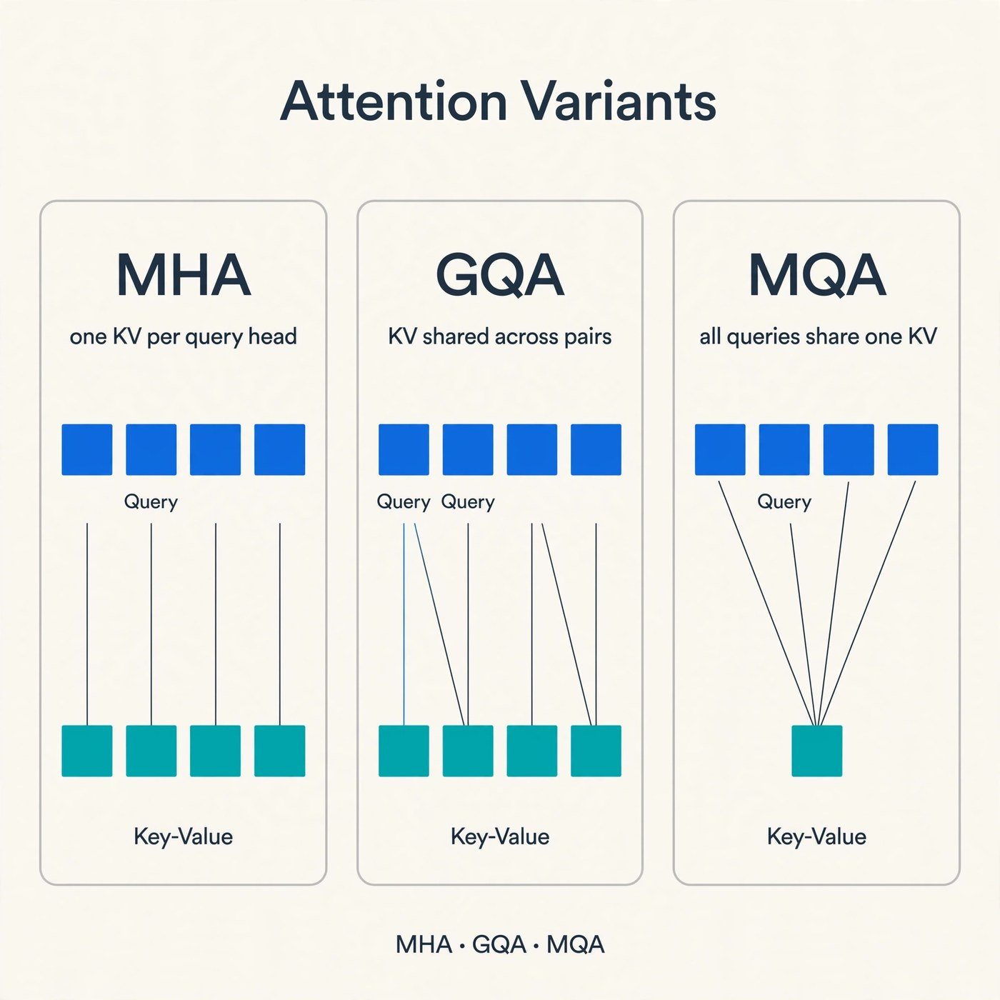
How to read this diagram
- MHA panel: four query heads, four KV heads, one-to-one lines. Maximum memory. Maximum expressivity on the key/value side.
- GQA panel: four query heads, KV heads shared across pairs (two groups of two). The lines show which queries read which shared KV head.
- MQA panel: four query heads, all lines converging on a single KV head. Minimum memory.
- The tradeoff, visually: the query side (blue) never shrinks. Sharing touches only the key-value side (teal). Experiments showed that the model's quality lives mostly in many distinct queries. Sharing keys and values causes little damage.
Step 3: real numbers
All arithmetic uses published configurations. Precision: fp16, 2 bytes per number. Head dim: 128.
| Model | Attention | Layers x KV heads | Bytes per token | Cache at 4k context |
|---|---|---|---|---|
| LLaMA-2 7B | MHA (32 KV) | 32 x 32 | 2 x 32 x 32 x 128 x 2 = 0.50 MB | 2.0 GB |
| LLaMA-2 70B | GQA (8 KV) | 80 x 8 | 2 x 80 x 8 x 128 x 2 = 0.31 MB | 1.25 GB |
| LLaMA-2 70B if MHA | MHA (64 KV) | 80 x 64 | 2 x 80 x 64 x 128 x 2 = 2.50 MB | 10.0 GB |
| GPT-3 175B | MHA (96 KV) | 96 x 96 | 2 x 96 x 96 x 128 x 2 = 4.50 MB | 9.0 GB at 2k ctx |
The middle two rows are the money comparison. GQA-8 makes the 70B model's per-token cache smaller than the 7B model's. The 70B model has 10x the parameters. Without GQA, serving the 70B at long context needs 8x the KV memory. Multiply by batch size: 32 concurrent users x 2 GB = 64 GB just for cache. That is why every serving system cares.
Common misunderstanding: MQA and GQA are strictly worse; MHA is always better. The quality story is subtler. MQA costs a small quality penalty versus MHA at the same size. GQA is the sweet spot. With 8 KV groups, quality is nearly indistinguishable from MHA. It keeps most of MQA's memory win.
That is why GQA-8 is the default in LLaMA-2/3 70B and many others. The classic trap is to assert a big quality loss that the papers do not show.
Key takeaways
- MHA uses h KV heads. MQA uses 1. GQA uses g groups. Query heads never shrink. Only K and V are shared.
- KV cache per token = 2 x layers x KV-heads x head-dim x bytes. KV heads are a direct multiplier.
- GQA-8 gives near-MHA quality at near-MQA memory. LLaMA-2 70B's cache is 8x smaller than MHA would be.
- Fewer KV heads also means less memory bandwidth per decode step. That bandwidth saving is what speeds up generation.
Forward link: Chapter 8 puts this formula to work inside a full serving analysis. Volume 6 uses the same arithmetic. It explains why training memory, not just serving memory, forced these designs.
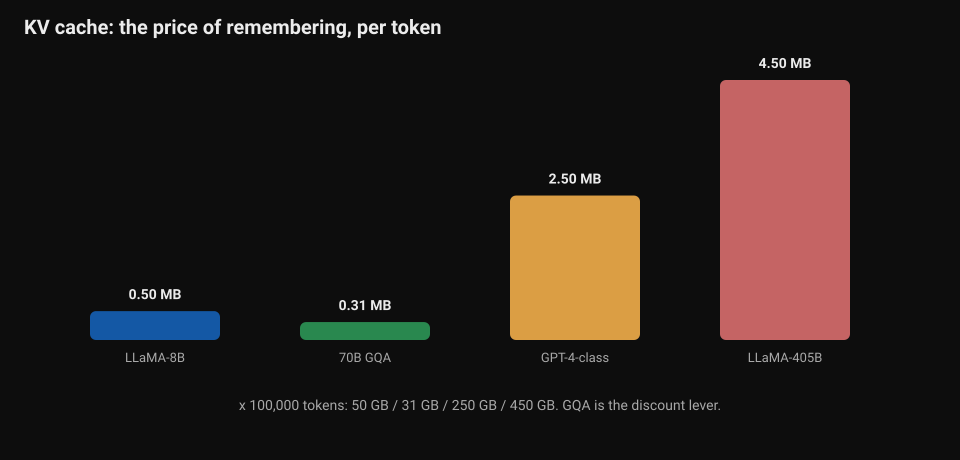
- Each bar is the per-token cache cost for one model.
- Multiply by the context length for the real bill, printed below.
- GQA shares key-value heads, so the bigger model can cost less per token.
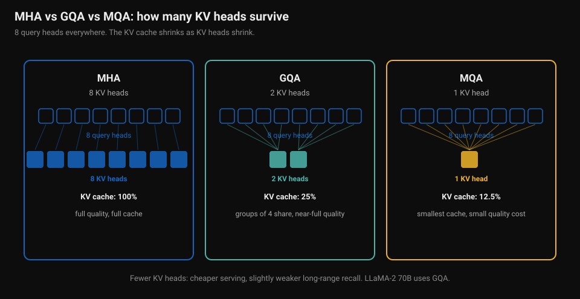
- Top row: 8 query heads in every panel.
- Bottom row: the KV heads each panel keeps. Lines show which queries share which KV head.
- The KV cache falls to 25 percent (GQA) and 12.5 percent (MQA).
- The price is slightly weaker long-range recall. LLaMA-2 70B uses GQA.
8. KV cache mechanics: the memory math of serving
What gets cached during generation. What it costs. Why serving lives or dies by it.
Chapters 6 and 7 describe what to compute. Without storage, generation recomputes everything for every new token. This chapter is the storage answer: the KV cache. It covers the memory math that decides whether serving lives or dies.
Design prompt
- "What exactly is stored in the KV cache? Why K and V, but not Q?"
- "Compute the KV cache for a 7B MHA model at 4k context in fp16. Then with batch size 32."
- "Why does decoding hit the memory-bandwidth limit? How does the KV cache relate?"
Step 1: the cache that makes generation affordable
Generation is autoregressive. Autoregressive means the model produces one token, appends it, and runs again. The KV cache stores the key and value vectors of every previous token, at every layer. Each new step computes Q, K, V only for the single new token. It reuses the cached K and V for everything before it. Without the cache, generating token 1,000 recomputes attention over all 1,000 tokens from zero.
Generation becomes an O(n2) process per token instead of O(n).
Why K and V but not Q? Look at the attention formula. Token i's query only ever dots against keys. The weights only ever mix values. Once token j is in the past, nothing uses its query again. Nothing in the future needs token j's question.
The future asks its own questions. Every future token needs its key and value. So K and V persist. The model recomputes Q fresh each step and discards it.
Step 2: the two phases: prefill vs decode
| Phase | What happens | Cost shape |
|---|---|---|
| Prefill | The model processes the user's prompt (say 2,000 tokens) in one parallel forward pass. The model computes K and V for all prompt tokens and stores them in the cache. | Compute-bound: big matrix multiplications over the whole prompt at once. This phase is the "time to first token". |
| Decode | The model generates one new token at a time. It computes the token's Q, K, V. It appends K and V to the cache. It attends over the full cache. It samples the next token. It repeats. | Memory-bandwidth bound: each step re-reads the entire cache plus all weights to produce a single token. The arithmetic is tiny. The data movement dominates. |
The bandwidth point deserves emphasis. In decode, generating one token for a 7B model reads about 14 GB of weights (fp16) plus the whole KV cache. It performs a few hundred GFLOPs of math. A GPU that does 300 TFLOPs/s moves only about 2 TB/s of memory. So the step takes as long as the reading, not the math. That is why quantization speeds up generation: fewer bytes per weight.
That is why GQA speeds up generation: fewer bytes per cache token. Both shrink what the GPU must read.
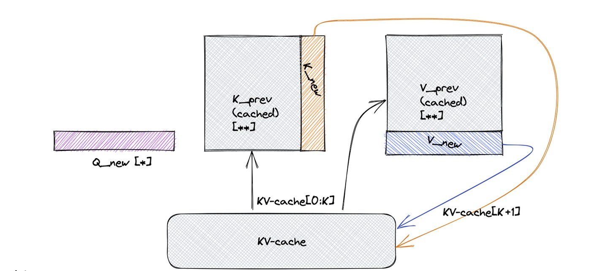
How to read this diagram
- Q_new (purple bar): the query of the single token the model generates now. The model computes it fresh and never caches it.
- K_prev / V_prev (gray blocks): the cache. Keys and values of all previous tokens sit in GPU memory from earlier steps.
- K_new / V_new (orange and blue strips): the new token's key and value, computed this step. The model appends them to the cache. The arrows labeled KV-cache[0:K] and KV-cache[K+1] show the cache growing by one slot.
- The data flow: scores = Q_new against [K_prev, K_new]. The weights mix [V_prev, V_new]. Next step, today's new vectors are part of "prev".
What breaks without the cache: each decode step recomputes K and V for all previous tokens. Total generation cost becomes quadratic in output length. A 4,000-token generation costs roughly 2,000 times more compute. The cache converts per-token work from O(n) recompute to O(1) amortized append plus an O(n) attention read.
step 1 (prefill): token 1..4096 -> compute ALL K,V once, store
cache: [K1 V1][K2 V2] ... [K4096 V4096] <- 4096 entries per layer
step 2 (decode): new token 4097
query Q4097 computed fresh <- Q never cached, used once
attend Q4097 against cached K1..K4096 <- no recompute of old tokens
append [K4097 V4097] to the cache <- grows by one entry per step
step 3: new token 4098 reads K1..K4097, appends [K4098 V4098] ...
what breaks: without the cache, each decode step would recompute
all 4096+ key/value vectors. With it, decode costs O(1) new work
but the cache itself grows linearly with sequence length.
Step 3: the memory math, worked
The worked numbers from the chapter:
KV cache bytes = 2 (K and V) x layers x KV-heads x head-dim x bytes-per-value x seq-len x batch LLaMA-2 7B, fp16, seq 4096, batch 1: 2 x 32 layers x 32 KV-heads x 128 x 2 bytes x 4096 = 0.5 MiB per token x 4096 = 2.0 GiB Same model, batch 32 (32 concurrent users): 2.0 GiB x 32 = 64 GiB <- the cache alone exceeds most single GPUs LLaMA-2 70B (GQA-8), fp16, seq 4096, batch 1: 2 x 80 x 8 x 128 x 2 x 4096 = 1.25 GiB (MHA would have been 10 GiB: the GQA chapter paying off visibly)
Practitioners live with two consequences. First, the cache caps batch size. Every concurrent sequence holds its own cache. So long contexts directly reduce how many users one GPU serves. Second, the cache makes context length a serving cost, not just a model capability. Doubling max context doubles worst-case cache per sequence.

Common misunderstanding: the KV cache is pure win, a free speedup. It trades compute for memory. Memory is the binding constraint in serving. Engineers new to inference size deployments by parameter count. They say "70B needs about 140 GB in fp16". They forget the cache.
Then the server runs out of memory at batch size 8 with 4k contexts. Always budget for four items: weights, KV cache times batch times max length, and activations headroom.
Key takeaways
- The KV cache stores past K and V per layer. Each decode step appends one token's K and V and reuses the rest.
- Q is never cached: past queries are never needed again.
- Prefill is compute-bound: time to first token. Decode is memory-bandwidth bound: tokens per second.
- Cache bytes = 2 x layers x KV-heads x head-dim x bytes x seq-len x batch. It caps batch size and makes context length a serving cost.
Forward link: Volume 8 (inference and serving) builds directly on this chapter. Paged attention manages this cache's fragmentation. Continuous batching packs sequences around it. Quantization shrinks it. Volume 6 needs the same formula to explain training-time activation memory.
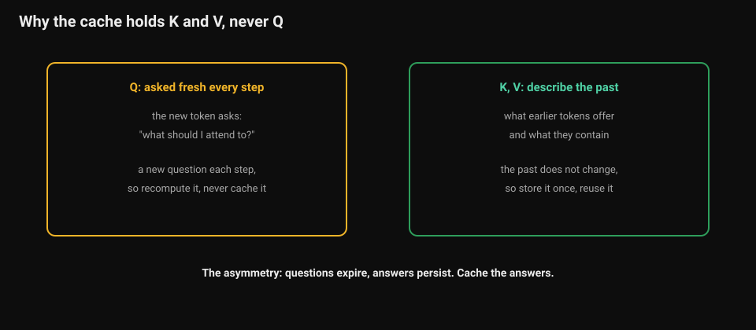
- On the left, Q is the current question, new every step.
- On the right, K and V are the past's answers, fixed once written.
- Caching the answers makes generation affordable.
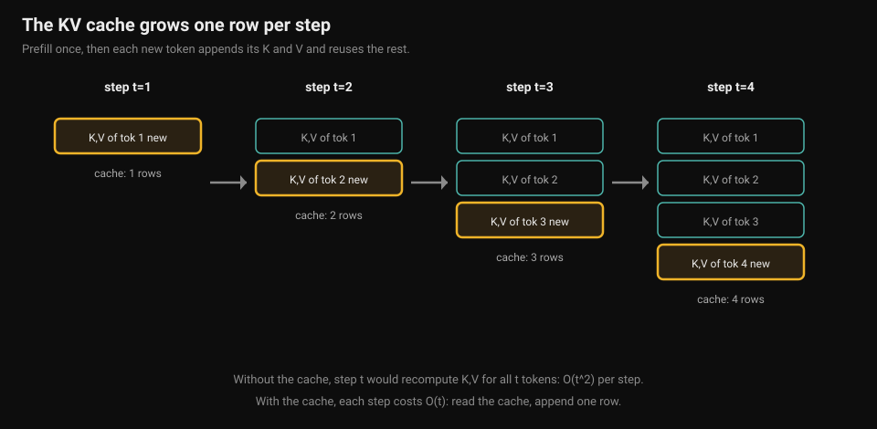
- Step t=1 holds one row. Step t=4 holds four rows.
- Amber rows are new. Teal rows are reused.
- Without the cache, step t recomputes all t rows: O(t squared) per step.
- With the cache, each step reads t rows and appends one: O(t).
Capstone lab: attention in NumPy, BPE from scratch
LAB A: single-head attention in NumPy LAB B: BPE tokenizer from scratch
+-------------------------------+ +-------------------------------+
| build Q,K,V from toy matrices | | start from letters + counts |
| scale, mask, softmax, weight | | count pairs, merge the winner |
| reproduce the chapter numbers | | encode new text with merge rank |
| check: weights sum to 1.0 | | check: same input -> same ids |
+-------------------------------+ +-------------------------------+
chapter 3 in code chapter 1 in code
Two runnable labs. The first reproduces every number in Chapter 3. The second reproduces the merges in Chapter 1.
Design prompt
- "Your NumPy attention disagrees with the chapter's numbers at the softmax step. Where do you look first?"
- "Your BPE merge counts do not match. What is the most likely bug in pair counting?"
LAB A: attention LAB B: BPE tokenizer
+---------------------+ +---------------------+
| X, W_Q, W_K, W_V | | toy corpus |
| (tiny matrices) | | "low" x5 ... |
+----------+----------+ +----------+----------+
v v
+----------+----------+ +----------+----------+
| Q,K,V -> scores | | count pairs |
| -> mask -> softmax | <---- shared discipline ----> | -> merge winner |
| -> output | | -> repeat 10x |
+----------+----------+ +----------+----------+
v v
assert == chapter numbers assert merges == chapter list
Lab A: single-head attention reproducing Chapter 3
Goal: write the five steps from Chapter 3 in NumPy. Verify every intermediate matrix against the worked example.
import numpy as np # NumPy only: every op stays visible, no framework magic
# --- the exact matrices from Chapter 3 ---
# WHAT: fixed toy inputs, so every intermediate is checkable by hand.
# WHY fixed, not random: random inputs would make the assertions below
# meaningless. These are the Chapter 3 worked-example matrices, so you can
# check each step against the chapter's hand-computed numbers.
# WHAT BREAKS: changing any value invalidates the assertions at the bottom.
X = np.array([[1,0,1,0],[0,1,0,1],[1,1,0,0]], dtype=float) # 3 tokens, dim 4
W_Q = np.array([[1,0],[0,1],[1,0],[0,1]], dtype=float) # projects dim 4 -> head dim 2
W_K = np.array([[1,1],[0,0],[1,0],[0,1]], dtype=float)
W_V = np.array([[1,0],[0,2],[1,1],[0,0]], dtype=float)
def attention(X, W_Q, W_K, W_V):
# WHAT: one causal self-attention head, the five Chapter 3 steps.
# WHY one line per step: each line maps 1:1 onto the math. A fused einsum
# version would be faster but unreadable; this is a teaching implementation.
# COMPLEXITY: O(S^2 * d) time, O(S^2) memory, from the score matrix.
# WHAT BREAKS: per-step notes below; each names the failure mode.
# 1. project: (3,4) @ (4,2) -> (3,2) for Q, K, V alike.
Q, K, V = X @ W_Q, X @ W_K, X @ W_V
d_k = Q.shape[-1] # head dim, read from the matrix, never hardcoded
# 2. score + scale. WHY divide by sqrt(d_k): raw dot products grow with
# dim, which pushes softmax into saturation (Chapter 3). WHAT BREAKS: skip
# the scale and weights collapse toward one-hot; the w[1] assertion fails
# because [0.5, 0.5] becomes roughly [0.88, 0.12].
scores = Q @ K.T / np.sqrt(d_k)
# 3. causal mask. WHY -inf and not 0: exp(-inf) is exactly 0, killing the
# weight; masking with 0 would ADD e^0 = 1 of weight to future tokens.
# WHAT BREAKS: mask with 0 and future information leaks; w[0] is no longer
# [1, 0, 0] because token 0 starts attending to tokens 1 and 2.
mask = np.triu(np.ones_like(scores), k=1).astype(bool) # True above diagonal
scores = np.where(mask, -np.inf, scores)
# 4. softmax, computed stably. WHY subtract the row max first: exp()
# overflows past ~88; the shift cancels out in the division, so the result
# is mathematically identical but every intermediate stays finite.
# WHAT BREAKS: without the shift, large scores give inf/inf = nan, and
# every assertion below fails with nan.
scores = scores - scores.max(axis=-1, keepdims=True)
weights = np.exp(scores)
weights = weights / weights.sum(axis=-1, keepdims=True) # rows now sum to 1
# 5. mix. Each output row is a convex combination of the V rows, weighted
# by relevance. WHY return the weights too: you need them to check the
# alignment against the chapter's hand-computed matrices.
return weights @ V, weights
out, w = attention(X, W_Q, W_K, W_V)
print("weights:\n", np.round(w, 3)) # 3 decimals: full floats hide the structure
print("output:\n", np.round(out, 4))
# --- assertions against the chapter's hand-computed numbers ---
# WHAT: the lab's grading rubric. WHY allclose instead of ==: float rounding
# differs in the last bits across machines; atol=1e-3 tolerates that while a
# real bug moves values by ~0.1 or more, so nothing slips through.
# WHAT BREAKS: any single-step error above fails loudly here, instead of
# silently producing plausible-looking numbers.
assert np.allclose(w[0], [1, 0, 0]) # token 0 sees only itself: forced [1,0,0]
assert np.allclose(w[1], [0.5, 0.5, 0]) # symmetric scores split evenly
assert np.allclose(w[2], [0.576, 0.140, 0.284], atol=1e-3)
assert np.allclose(out[2], [1.436, 1.424], atol=1e-3)
print("All assertions passed: your attention matches the chapter.")
How to read this code
- Setup. X holds 3 tokens as rows. The three W matrices are the learned projections. Here they are fixed, so the arithmetic is checkable by hand.
- Step 1, project. Every token gets a query (what am I looking for), a key (what do I offer), and a value (what I contribute). All three come out as (3,2).
- Step 2, score. Q @ K.T measures every query against every key. Entry (i,j) is how much token i wants from token j. Dividing by sqrt(2) keeps the numbers in softmax's healthy range.
- Step 3, mask. The upper triangle becomes -inf, so token i may only read tokens 0 through i. This is what makes the model causal.
- Step 4, softmax. Each row becomes a probability distribution. Row 0 is [1,0,0]: token 0 has nothing to read but itself.
- Step 5, mix. weights @ V blends the value rows by relevance. The output is (3,2): one vector per token, now context-aware.
- Check. The assertions compare your numbers to the chapter's hand computation. If one fails, the per-step comments above name the suspect line.
X(3,4)
/ | \
v v v
W_Q W_K W_V (each 4x2)
| | |
v v v
Q(3,2) K(3,2) V(3,2)
| |
+--+--+
|
v
Q @ K.T / sqrt(2) --> scores(3,3)
|
v
causal mask: upper triangle -> -inf
|
v
softmax each row --> weights(3,3)
|
v
weights @ V --> out(3,2)
What to observe: row 0 of the weights is exactly [1, 0, 0]. Token 0 cannot see the future. With only itself visible, attention is forced. This is the causal mask doing its job, visible as a number.
What breaks if you change X: remove the / np.sqrt(d_k) scaling and re-run. The weights barely change here because d_k = 2 is tiny. Change the matrices to random normals with d_k = 64. Compare scaled vs unscaled. Without scaling, the weights collapse toward one-hot and the softmax Jacobian vanishes. That experiment is the saturation argument from Chapter 3, run in your own terminal.
The lab ran on this machine (NumPy 1.26.4). All assertions passed.
Lab B: BPE tokenizer from scratch
Goal: write BPE training code. Reproduce merges #1 to #10 from Chapter 1 exactly.
import re
from collections import Counter # Counter tallies pair frequencies in one pass
# WHAT: the Chapter 1 toy corpus. Words are pre-split into characters, each
# word carries a frequency, and </w> marks end-of-word so merges never cross
# word boundaries.
# WHY this shape: BPE counts pairs over the whole corpus, and the frequencies
# decide the winner. "newest" x6 plus "widest" x3 give ("e","s") count 9,
# beating ("l","o") at 7 from "low" x5 plus "lower" x2, so ("e","s") takes
# merge #1 exactly as in Chapter 1.
# WHAT BREAKS: drop </w> and the first merges glue word endings to word
# beginnings, diverging from the expected sequence below.
corpus = {"l o w </w>": 5, "l o w e r </w>": 2,
"n e w e s t </w>": 6, "w i d e s t </w>": 3}
def pair_counts(corpus):
# WHAT: count every adjacent symbol pair, weighted by word frequency.
# WHY Counter: one pass over the corpus, O(total symbols). A plain dict
# with manual += would work; this is the idiom.
# WHAT BREAKS: counting 1 per word instead of += freq reorders the merges,
# because then "newest" and "low" weigh the same and ("l","o") wins
# the tie by insertion order.
counts = Counter()
for word, freq in corpus.items():
symbols = word.split()
for a, b in zip(symbols, symbols[1:]): # adjacent pairs via offset zip
counts[(a, b)] += freq
return counts
def merge_word(word, bigram):
# WHAT: rewrite every occurrence of the pair "a b" as "ab", as whole
# symbols only.
# WHY the regex guards (?<!\S) and (?!\S): symbols are space-separated,
# so the pair must match at symbol boundaries. Without them, merging
# ("t","</w>") would match the t inside the already-merged symbol "est",
# splitting it apart and corrupting the vocabulary.
# WHAT BREAKS: a plain str.replace("t </w>", "t</w>") corrupts merged
# symbols; the merge sequence diverges within two steps.
return re.sub(r"(?<!\S)" + re.escape(" ".join(bigram)) + r"(?!\S)",
"".join(bigram), word)
merges = []
for step in range(10):
# WHAT: one BPE training step: find the most frequent pair, record it,
# apply it to the whole corpus.
# WHY re-apply to the corpus each step: later pair counts depend on
# earlier merges. ("es","t") only exists after "e"+"s" merged.
# WHAT BREAKS: skipping the re-application freezes pair counts and the
# merge sequence diverges after step 1.
best, count = pair_counts(corpus).most_common(1)[0]
merges.append((best, count))
corpus = {merge_word(w, best): f for w, f in corpus.items()}
print(f"merge #{step+1}: {best[0]} + {best[1]} -> {''.join(best)} (count {count})")
# WHAT: the expected merge table from Chapter 1.
# WHY an exact list, not a range check: BPE is deterministic, so any
# divergence is a bug, not noise. The message tells you it diverged; the
# printed merges above show exactly where.
expected = [(("e","s"),9),(("es","t"),9),(("est","</w>"),9),(("l","o"),7),
(("lo","w"),7),(("n","e"),6),(("ne","w"),6),
(("new","est</w>"),6),(("low","</w>"),5),(("w","i"),3)]
assert [(m, c) for m, c in merges] == expected, "merge sequence diverged"
print("All 10 merges match Chapter 1.")
# --- encode a new word with the learned merges, in order ---
def encode(word, merges):
# WHAT: apply the learned merges greedily, lowest rank first, to a fresh
# word. This is the OOV handling: unseen words decompose into learned pieces.
# WHY in merge order: BPE encoding IS replaying the training merges in the
# order learned; any other order is a different tokenizer.
# WHAT BREAKS: reversing the order (try it) yields a different, worse
# segmentation and different token IDs downstream.
word = " ".join(list(word)) + " </w>" # same char-split + end marker as training
for (a, b), _ in merges:
word = merge_word(word, (a, b))
return word.split()
print("encode('lowest') ->", encode("lowest", merges)) # unseen word: the OOV test
print("encode('newer') ->", encode("newer", merges)) # partial reuse: the realistic case
How to read this code
- Setup. The corpus is four words with frequencies. Spaces separate symbols. </w> marks word end, so merges never glue two words together.
- Count. pair_counts tallies every adjacent symbol pair, weighted by how often its word occurs. ("e","s") scores 9: 6 from "newest" plus 3 from "widest".
- Merge. The top pair fuses everywhere it appears: "e s" becomes "es" in all four words at once. The regex guards keep the match on symbol boundaries.
- Repeat. Ten rounds, re-counting after every merge. Each merge creates the pairs the next round counts. The merges list is the learned tokenizer, in rank order.
- Check. The expected table is Chapter 1's merge sequence. BPE is deterministic. Any mismatch is a bug. The printed merges show exactly which round diverged.
- Encode. A new word is split into characters, then the ten merges replay in order. "lowest" was never seen in training, yet it decomposes into learned pieces. That is the OOV solution.
corpus (word -> frequency)
|
v
pair_counts: tally adjacent pairs x frequency --> Counter({('e','s'): 9, ...})
|
v
most_common(1) --> best pair, e.g. ('e','s')
|
v
merge_word: rewrite "e s" -> "es" in every word (regex guards hold boundaries)
|
v
repeat 10x, recording (pair, count) --> merges list (the tokenizer, ranked)
|
v
assert merges == expected (deterministic: divergence means a bug)
|
v
encode: replay merges in order on a NEW word --> token list
What to observe: encode("lowest") produces ['low', 'est</w>']. A word never seen in training decomposes into learned pieces. That is the OOV solution from Chapter 1, running. encode("newer") gives ['new', 'e', 'r</w>']. Partial reuse: the realistic case.
What breaks if you change the merge order: apply the merges in reverse order during encoding and compare. You get a different, worse segmentation. Merge order is part of the tokenizer. Shuffling it silently changes every token ID downstream. The lab ran on this machine. All 10 merges matched the chapter.
Key takeaways
- Lab A proves your attention implementation against hand-computed numbers. Disagreement means a bug, not a rounding choice.
- Lab B proves your BPE trainer against the merge sequence, then shows OOV handling on unseen words.
- Both labs continue the volume's build-an-LLM thread. You reuse this tokenizer and this attention in Volume 5's tiny GPT.
Forward link: Volume 5, capstone: this BPE tokenizer plus this attention implementation grow into a tiny GPT trained on a toy corpus. Keep both files.
Appendix 4A: Long-Context Engineering
Volume 4 derives RoPE from zero and notes the boundary. A model trained on 4k context degrades beyond 4k. Chapter 8 covers the KV cache. It does not cover two engineering disciplines that stretch context in practice. The first discipline rescales positions so the model survives longer inputs. The second discipline evicts cache entries so the memory bill stays payable.
This appendix teaches both from zero.
Chapter 1. Stretching RoPE past its training window
1.1 Why extrapolation breaks
RoPE encodes position by rotating each pair of embedding dimensions at a fixed frequency. During training, the model sees only positions 0 through L. L is the training length. The rotation angles for those positions become familiar. Position L+5000 does not. The model has never seen those angles.
Its attention patterns fall apart on them. Perplexity measures surprise: higher means worse. Perplexity climbs, and long-range answers degrade first.
The goal of every extension method: make positions beyond L look familiar again. Do this without retraining the model from zero.
1.2 Position interpolation: the simple fix
If the model knows positions 0 to 4000 and you need 16,000, divide every position index by 4. Position 8000 becomes 2000, which the model has seen. This is position interpolation: map m to m/s. s is the extension factor.
With fine-tuning, it works up to about 8x. Its flaw: it compresses every RoPE frequency equally. The high-frequency channels carry fine-grained local position information. Nearby tokens need this information to tell each other apart. Interpolation blurs them. Fine-tuning recovers some of this blurring.
But the blurring caps how far the method reaches.
1.3 NTK-aware scaling: protect the high frequencies
A community researcher known as bloc97 posted a one-line improvement in June 2023. Instead of stretching positions, scale RoPE's base frequency. RoPE's per-dimension frequencies come from a base b, usually 10,000:
theta_d = b^(-2d/D)
NTK-aware scaling replaces b with b' = b * s^(D/(D-2)). D is the head dimension. s is the extension factor. Low-frequency dimensions get interpolated. High-frequency dimensions stay nearly untouched. The local-resolution channels survive.
The worked numbers for a LLaMA-style head with D = 128 and b = 10,000:
- s = 2 gives b' = 20,221
- s = 4 gives b' = 40,890
- s = 8 gives b' = 82,685
- s = 16 gives b' = 167,199
Two practical notes. First, this often works with no fine-tuning at all for 2x to 4x extensions. That is why inference engines adopted it quickly. Second, Code Llama shipped with NTK-aware scaling. Its config sets the base to 1,000,000 manually. That is why that config value looks odd.
1.4 YaRN: NTK-by-parts plus a temperature fix
YaRN appeared in late 2023. It starts from one observation: NTK-aware scaling is still one blunt rule for all dimensions. Its NTK-by-parts scheme treats each dimension by how many rotations it completes inside the training window. The scheme leaves alone the dimensions that rotate many times (high frequency, short wavelength). The scheme fully interpolates the dimensions that rotate less than once (low frequency). Dimensions in between get a smooth ramp.
For the LLaMA family, the ramp runs from alpha = 1 to beta = 32 rotations.
YaRN adds a second fix. Longer contexts spread attention over more tokens. This shifts the entropy of the attention distribution. Entropy measures how spread out a distribution is. YaRN compensates by dividing the pre-softmax logits by a temperature t. 1/t = 0.1 * ln(s) + 1.
For s = 16, 1/t = 1.277. The implementation scales the rotated queries and keys by sqrt(1/t) = 1.13. No attention code changes. No runtime cost.
YaRN works training-free at inference time (Dynamic-YaRN). It reaches its best quality with a short fine-tune of a few hundred steps. It composes with FlashAttention. That is why it became the default extension recipe in serious long-context fine-tuning.
import math
def ntk_aware_theta(theta, scale, dim):
# NTK-aware base: theta' = theta * scale^(dim / (dim - 2)).
# Why this exponent: it spreads the interpolation pressure across
# dimensions so the high-frequency channels (which carry local
# position resolution) move the least. Change the exponent and the
# pressure lands on the wrong dimensions: too small and low freqs
# extrapolate, too large and high freqs get blurred like plain PI.
return theta * (scale ** (dim / (dim - 2)))
def yarn_temperature(scale):
# YaRN's entropy fix: 1/t = 0.1 * ln(s) + 1. Longer contexts spread
# attention mass over more tokens. Dividing logits by t re-sharpens
# the distribution. The implementation scales q,k by sqrt(1/t): zero
# extra compute at inference.
return 0.1 * math.log(scale) + 1
def precompute_freqs_ntk(dim, end, theta=10000.0, scale=4.0):
# RoPE frequencies with NTK-aware scaling, pure Python.
# freqs[d] = 1 / theta'^(2d/dim): the rotation speed of dimension d.
# cos/sin of (position * freq) are the rotation matrices from Vol 4.
theta_p = ntk_aware_theta(theta, scale, dim)
freqs = [1.0 / (theta_p ** (2 * d / dim)) for d in range(dim // 2)]
# Outer product: positions 0..end-1 against each frequency.
angles = [[t * f for f in freqs] for t in range(end)]
cos = [[math.cos(a) for a in row] for row in angles]
sin = [[math.sin(a) for a in row] for row in angles]
return cos, sin
print("NTK-aware theta, base 10000, dim 128:")
for s in (2, 4, 8, 16):
print(f" scale {s:2d}x -> theta' = {ntk_aware_theta(10000, s, 128):9.1f}")
print("YaRN temperature:")
for s in (8, 16, 32):
t_inv = yarn_temperature(s)
print(f" scale {s:2d}x -> 1/t = {t_inv:.4f}, q,k scale = {math.sqrt(t_inv):.4f}")
How to read this diagram
ntk_aware_thetais the one-line formula. The exponent dim/(dim-2) is slightly above 1. So the base grows a little faster than the scale factor. For dim 128 and scale 4, theta moves from 10,000 to 40,890.yarn_temperaturecomputes the entropy compensation. At 16x, the logits are divided by 1.277. Equivalently, q and k are scaled by 1.13 before the dot product.precompute_freqs_ntkbuilds the actual rotation tables. Frequencies come from the scaled base, then cos and sin of position times frequency. This is the same table Volume 4 derives, with theta replaced by theta prime.- The printed tables are the numbers you would put in a model config. If a config shows theta 40,890 on a 4k-trained model serving 16k, it does exactly this.
Key takeaways
- RoPE breaks past its training length because the angles are unfamiliar. Every extension method makes long positions look familiar again.
- Position interpolation divides positions by s. NTK-aware scaling raises the base to b * s^(D/(D-2)), protecting high frequencies. YaRN adds per-dimension ramps plus a temperature fix.
- NTK-aware often works with no fine-tuning at 2x to 4x. YaRN is the recipe when you plan to fine-tune.
attention weight per position (a 4k-context head):
pos 1 pos 2 pos 3 ... pos 3990 pos 3995 pos 4000
[####] [##] [#] [..] [#] [####] <- sink at start,
0.31 0.05 0.01 ~0.00 0.02 0.40 recency at end
eviction policies:
sliding window: keep only last W tokens <- simple, kills sinks, risky
heavy hitters: keep high-attention tokens <- keeps sinks, needs tracking
attention sinks (StreamingLLM): always keep the first few tokens,
then a sliding window on top <- the practical answer
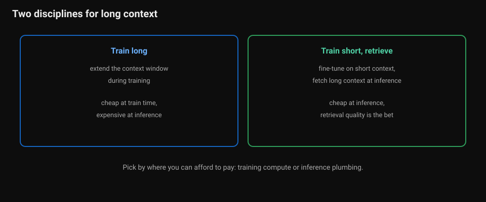
- Left: extend the window during training. Serve the long context directly.
- Right: fine-tune short. Fetch context at inference time.
- The choice is a budget decision, not a correctness one.
Chapter 2. KV cache eviction policies
2.1 Why you cannot keep everything
Every generated token appends its key and value vectors to the KV cache. Every future token attends to all of them. The cache grows linearly with sequence length. At long context, it dominates GPU memory.
The worked numbers: a 32-layer model with d_model 4096 in fp16. It stores 2 (K and V) * 32 * 4096 * 2 bytes = 0.5 MB per token. At 128k tokens that is 64 GB, more than most single GPUs hold, before counting the model weights at all. Something has to give. Either buy more memory, or keep fewer tokens.
Eviction keeps a fixed budget of tokens and discards the rest. The research question: which tokens are safe to discard?
2.2 The attention sink discovery
The surprise finding: the first few tokens of any sequence attract huge attention weights no matter what they say. They act as sinks that stabilize the attention distribution. Drop them and the model breaks. Drop middle tokens and often nothing happens.
This single fact shapes every policy below. Whatever else you evict, protect the sinks.
2.3 Three policies
Sliding window. Keep the most recent W tokens. Evict everything older. Simple and fast. Wrong for anything that needs long-range recall. The answer buried 50k tokens back is gone.
Good for streaming chat where only recent context matters.
StreamingLLM. Keep the sink tokens (typically the first 4) plus a sliding window of recent tokens. The cache stays bounded at sink + window no matter how long the stream grows. So the model generates coherently forever. The price: middle context is discarded entirely. So retrieval over the full history fails.
H2O (Heavy-Hitter Oracle). Attention scores follow a power law. A power law means a few items get most of the mass. A small set of tokens, the heavy hitters, receives most of the attention mass across generation steps. H2O keeps a running sum of each token's received attention. At a fixed budget, it retains the top heavy hitters plus recent tokens.
With only 20% of the full cache budget, it matches full-cache accuracy across the paper's benchmarks. It beat StreamingLLM on perplexity in long streaming runs. The cost is bookkeeping. You must track accumulated scores per token per head.
The honest comparison: sliding window is a positional rule, blind to content. StreamingLLM adds sinks to the positional rule. H2O is content-aware. That is why it keeps quality at small budgets. It takes more code to build. That is why it is not everywhere.
def kv_cache_bytes(n_layers, d_model, seq_len, bytes_per=2):
# KV memory: 2 (K and V) * layers * d_model * seq_len * bytes.
# fp16 means 2 bytes. int8 KV quantization halves it (see Vol 8).
# This is per sequence: multiply by batch size for the real bill.
return 2 * n_layers * d_model * seq_len * bytes_per
def h2o_evict(scores, budget, n_recent=4, n_sink=4):
# H2O-style eviction on one attention head, pure Python.
# scores: accumulated attention received per token so far (the
# "heavy-hitter" signal). budget: total tokens we may keep.
# Keeps: the first n_sink tokens (attention sinks, always protected),
# the last n_recent tokens (local context), and the top heavy hitters
# by accumulated score for the remaining budget.
# What breaks if changed: dropping the sinks destabilizes attention
# (the sink finding). Dropping recency kills local coherence. Using
# per-step scores instead of accumulated scores makes the ranking
# noisy and eviction thrashy.
n = len(scores)
if n <= budget:
return list(range(n)) # Under budget: evict nothing.
keep = set(range(n_sink)) # attention sinks
keep |= set(range(n - n_recent, n)) # recent window
# Heavy hitters: highest accumulated attention among the rest.
candidates = [i for i in range(n) if i not in keep]
candidates.sort(key=lambda i: scores[i], reverse=True)
keep |= set(candidates[:budget - len(keep)])
return sorted(keep)
# The memory bill from the chapter: 32 layers, d_model 4096, fp16, 128k.
print(f"full 128k cache: {kv_cache_bytes(32, 4096, 131072) / 1024**3:.0f} GB")
print(f"H2O at 20% budget: {kv_cache_bytes(32, 4096, 131072) / 1024**3 * 0.2:.0f} GB")
# Tiny eviction demo: 20 tokens, budget 8.
import random
random.seed(0)
accum = [random.paretovariate(2.0) for _ in range(20)] # power-law-ish scores
print("kept positions:", h2o_evict(accum, budget=8))
How to read this diagram
kv_cache_bytesis the memory arithmetic. The factor of 2 for K and V is the line people forget. The per-sequence note is the line that saves you in capacity planning. Batch size multiplies everything.h2o_evicttakes accumulated attention scores, not per-step ones. Accumulation is what makes "heavy hitter" a stable property instead of a noisy one.- Sinks are protected unconditionally (the first 4 indices), then the recent window. Then the top scorers fill the remaining budget. The demo prints which of 20 positions survive an 8-token budget.
- The printed memory numbers show the payoff. 64 GB full cache versus about 13 GB at H2O's 20% budget. Accuracy matches on the paper's tasks.
Key takeaways
- The KV cache grows linearly with length. 0.5 MB per token for a 32-layer 4096-wide fp16 model. 64 GB at 128k tokens.
- Attention sinks (the first tokens) must always be kept. Every policy builds on this.
- Sliding window is blind to content. StreamingLLM adds sinks to the window. H2O keeps heavy hitters by accumulated attention and holds quality at 20% budget.
- Eviction is lossy. For tasks that need exact long-range recall, eviction is the wrong tool. Buy memory or retrieve differently.
Last verified: September 2026. NTK-aware scaling (b' = b * s^(D/(D-2)), bloc97, June 2023; adopted by Code Llama with base 1,000,000): documented in the YaRN paper's treatment (arXiv:2309.00071, 2023). YaRN (NTK-by-parts ramp with alpha=1, beta=32 for LLaMA; temperature 1/t = 0.1 ln s + 1; ~400 fine-tuning steps): arXiv:2309.00071. Position interpolation (Chen et al., 2023): the baseline method YaRN compares against. StreamingLLM attention sinks (Xiao et al., 2023): the sink phenomenon and sink-plus-window policy. H2O (Zhang et al., NeurIPS 2023): power-law attention, heavy hitters plus recent tokens, 20% budget matching full-cache accuracy.
UNVERIFIED: the 0.5 MB/token and 64 GB figures are computed from the stated architecture (32 layers, d_model 4096, fp16). They are not quoted from a paper. Verify against your own model's config before capacity planning.
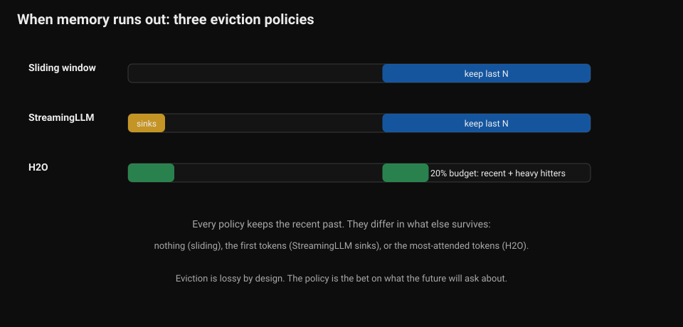
- The dark bar is the full context. The colored part is what survives.
- Sinks are the first tokens, kept because attention leans on them.
- H2O keeps the tokens the model actually attended to most.
Interview Q&A
Five questions from this volume, the way interviewers ask them. Each answer builds on the chapters above. Say the answer from memory before you read it.
Q1. Write the KV-cache memory formula from memory. Then compute it for LLaMA-2 7B in fp16 at 4,096 tokens, batch 1 and batch 32.
Answer. Cache bytes = 2 (K and V) x layers x KV-heads x head-dim x bytes-per-value x seq-len x batch. For LLaMA-2 7B: 2 x 32 x 32 x 128 x 2 x 4096 x 1 = 0.5 MiB per token, so 2.0 GiB at 4,096 tokens. At batch 32 that is 64 GiB. The cache alone exceeds most single GPUs.
Follow-up. What does the cache cap in a serving system? Batch size. Every concurrent sequence holds its own cache, so long contexts directly cut how many users one GPU serves. Context length is a serving cost, not just a capability.
Q2. Compare MHA, MQA, and GQA-8 on LLaMA-2 70B. Give the per-token cache numbers and the quality story.
Answer. Per token in fp16: MHA with 64 KV heads is 2.50 MB, so 10.0 GiB at 4k context. GQA-8 is 0.31 MB per token, so 1.25 GiB. GQA-8 makes the 70B model's cache smaller than the 7B MHA model's. On quality: MQA costs a small penalty versus MHA at the same size, but GQA-8 is nearly indistinguishable from MHA. That is why GQA-8 is the default in LLaMA-2/3 70B.
Follow-up. The trap answer is "MQA and GQA are strictly worse." What do you say instead? The quality loss is small for MQA and near zero for GQA-8, while the memory win is large. Name the tradeoff with numbers, not adjectives.
Q3. A 4,096-token sequence, one attention head, float32. How big is the score matrix? What happens when you double the context?
Answer. The score matrix is n x n, so 4,096 squared = 16.8 million numbers = 67 MB for one head. With 32 heads that is 2.1 GB per layer just for scores. Doubling the context to 8,192 quadruples the bill. Time and memory both scale as O(n^2 x d).
Follow-up. Name two systems answers to this bill. FlashAttention recomputes the scores instead of storing them (as you learned in Volume 6). The KV cache exists because re-paying the quadratic bill on every generated token is too expensive.
Q4. Why is attention position-blind? What does RoPE do about it?
Answer. Attention is a weighted sum over the sequence. Permute the tokens and the output permutes the same way. Nothing in the mechanism knows order. RoPE rotates each query and key vector by an angle that depends on its position. The dot product then depends on relative position, so order information enters through the rotation.
Follow-up. What breaks past the training window? The rotation angles go out of distribution. Appendix 4A covers stretching RoPE and the failure modes to expect.
Q5. Contrast prefill and decode. Which is compute-bound, which is memory-bound, and why does the distinction matter?
Answer. Prefill processes the whole prompt in parallel: compute-bound. Decode generates one token at a time, streaming the weights and the KV cache for each: memory-bound. It matters because one worker type cannot be optimal for both, which is why disaggregated serving splits them (as you learned in Volume 8).
Follow-up. Treat this claim with suspicion: "attention weights explain the model's decision." Why? Weights show where information flowed, not why the output is what it is. The values, the later layers, and the residual stream shape the result too.
Watch and go deeper
See attention and tokenization in motion. Two of the clearest visual explainers ever made. Plus Karpathy building both systems from scratch in code.
Go deeper
- Attention Is All You Need The 2017 paper that introduced the transformer. Read it after you can draw the architecture.
- The Illustrated Transformer Jay Alammar's visual walkthrough of attention and the transformer block. Best warm-up before the paper.
- Attention? Attention! Lilian Weng's math-first tour of attention variants, with clean diagrams.
- minbpe Karpathy's minimal, readable BPE implementation. The code twin of the tokenization chapter.